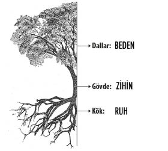
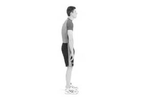

Overcoming the illusion
ADIM X: HASTALIKLARIN ZİHİNSEL ETKENLERİ İNSAN BEDENİNE GÜVEN
MODERN TIBBIN YANILGISI: İnsanoğlunun en büyük yanılgısı, “insan bedeninin belirli ilaçlara veya dışarıdan takviyelere ihtiyacı olduğuna” inanmasıdır. İnsan vücudu ihtiyacı olan birçok iyileştirici mekanizmayla dünyaya gelir. Öncelikle, ihtiyacımız olan her şeyin içimizde var olduğunu bilmek gerekir. Ne yazık ki 100-150 senelik modern tıp bilimi, köklerini aldığı neredeyse 7 bin senelik bir geçmişe dayanan Uzakdoğu ve Mısır tıbbını reddetmiş durumdadır. Zaten bugün, modern insanın gelişen teknolojiye rağmen sağlık konularında aslında iddia ettiği kadar da yol kat etmediği de ortadadır.
Önyargılarını kenara bırakan her insan günümüzde daha fazla ilaca ve teknolojik olanaklara sahip olmamıza rağmen kanser, panik atak, depresyon ve bunun gibi birçok hastalığın görülme sıklığının gittikçe arttığının farkına varacaktır.
İNSAN BEDENİNİN MÜKEMMELLİĞİ: Mesela bir insanın bayılma mekanizmasına bakalım. İnsanoğlunun en önemli organı beyindir. Beyin beslenmediğinde hiçbir organ işlevini yerine getiremez. Çünkü birçok iç organımız istemsiz kas grubu dediğimiz kas grupları ile çalışır. Beynimize kan gitmediğinde vücudumuz ne olursa olsun bu kanı beynimize yollamak için “bayılma” dediğimiz ve “kötü” olarak adlandırdığımız süreci bize yaşatır.
Yaralanma ihtimali pahasına vücudumuz bir an için tüm elektriksel uyarıları keser ve bedenimizin yere düşmesini sağlar. Biz ayaktayken kalbimiz beynimize gereken kanı pompalamak için yerçekimine karşı çalışmak zorunda kalırken yatar haldeyken gereken kan otomatik olarak beynimize gidecek ve gereken oksijen kaynağını sağlayacaktır. “Bayılma” mekanizması bizim hayatta kalmamızı sağlayan binlerce mekanizmadan biridir ve biz bu vücuda güvenmiyoruz, biz doğaya güvenmiyoruz, doğal olana güvenmiyoruz... Hasta oluyoruz, mutsuz oluyoruz...
ESTETİK AMAÇLAR: Günümüzde temiz kaynaklardan akan sularla ve “ileri teknoloji” şampuanlarımızla neredeyse her gün saçımızı yıkıyor, ona “besleyici” kremler sürüyoruz. Onlara zaman zaman bakım yaptırıyoruz. Ama nedense “ilkel” diye adlandırdığımız hiçbir toplumda modern insan kadar “kellik” sorunu yok. Ne büyük bir körlük... “Kellik” sadece binlerce örnekten biri... Birçok hastalık ve sorunda aynı tablo söz konusu...
İnsanoğlu estetik olma uğruna her sene milyonlarca dolarlık bir pazarın içerisinde kendine uygun kozmetik ürünleri bulmak için zaman ve para harcamaktadır. Bu ürünlerin birçoğunun ya hiç, ya da çok az işe yaradığının artık herkes farkındadır. Bununla da yetinmeyen insanoğlu, tarım ilacı olarak kullanılan “botoks” adlı kimyasalı yüzüne enjekte ettirerek kırışıklıktan kurtulmaya çalışmaktadır. Kırışıklık dediğimiz olgu derimizin su kaybetmesi dolayısıyla elastikiyetinin azalmasından başka bir şey değildir. Problem “su kaybetmesi” ise, çözüm de “su kazanması”ndan başka hiçbir şey değildir! Evet, birazcık su... Alıştığımız karışık ve karmaşık yollar sadece insan zihninin ve egosunun ürünüdür. Doğanın kuralları son derece açık, basit ve nettir. İnsanoğlu kendini aldatmakta ustadır, ama doğayı aldatmakta da bir o kadar âciz kalmıştır.
HASTALIKLAR: “Hastalık” dediğimiz kavramın iyice anlaşılması son derece önemlidir. Ateşin yükselmesi hastalığın kendisi değil, var olan hastalığın “semptom”udur. Vücuda yabancı organizmalar girdiğinde vücudun savaştığının, yani işlerin yolunda gittiğinin habercisidir.
Ateşin çıktığında vücudunu kutsa! Ona teşekkür et. Çünkü o seni korumak için çalışıyor demektir. Dışarıdan verilen ilaçlarla ateşi (özel tıbbi durumlar hariç) düşürmeye çalışmak bedenin savunma mekanizmasını tamamen etkisiz kılmaktır. Bu, ölümü hemen getirmeyen yavaş bir intihardır.
AĞRI: “Ağrı” dediğimiz mekanizmayı inceleyelim. Yürürken ayağımız yere temas ettiğinde ayak tabanımıza yer tarafından bir basınç uygulanır. Yine yürürken bastığımız yerde sivri bir cisim olduğunda ise basınç hissi bu sefer ağrı hissine dönüşür ve biz refleks olarak ayağımızı geri çekeriz. Ayağımız tamamen ya da kısmen hasardan kurtulur. Ufak bir çocuk düşünelim. Şöminedeki ateşi görüyor ve merak edip elini ateşin içine sokuyor. Eğer yanma hissi oluşmaz ise bu çocuk elini çekmeyecek ve belki tamamen, belki kısmen yanacaktır.
Başın ağrıdığında hastalığın kendisi baş ağrısı değildir. Başın ağrıması sadece bir semptomdur. Ağrıkesici aldığında ise “hastalığı iyileştirmiş” olmaz, “semptomları baskılamış” olursun. Sana hayatın boyunca hizmet edecek olan bu mükemmel makinenin uyarılarına kulak asmamak ve geçiştirmek son derece aptalcadır. Evrende en ilkel varlıkların bile anlamış olduğu “neden-sonuç” ilişkisinin üzerine insanoğlunun kitaplar yazmış, teoriler üretmiş, ama hâlâ “anlayamamış” olması üzücüdür.
“Ağrı”nın asla kötü bir olgu olmadığının ve bizim hayatta kalabilmemiz adına en büyük dayanağımız olduğunun farkına varma zamanı gelmiştir. Ağrıyı kutsa. Ağrının sana neyi yanlış yaptığını söylemesine izin ver. “Ağrı”larımız olmasaydı hiçbirimiz hayatta kalamazdık!
BAĞIŞIKLIK SİSTEMİ: Her bireyde “bağışıklık sistemi” mevcuttur. Peki, bu mevcut olan bağışıklık sistemine neden güvenemiyoruz? İlaçlar ve diğer tedaviler daha mı etkili? Çok basit bir şekilde örnekleyelim. Bağışıklık sistemi olmayan bir insanın ilaçlarla yaşamayı sürdürebilmesi tüm teknolojimize ve bilgimize rağmen imkânsızdır. Oysa ilaçları olmayan, bağışıklık sistemi sağlam olan bir insanın onlarca yıl yaşaması ise kaçınılmazdır. İnsanoğlu sağlık adına atacağı her adımda önce “insan bedenine güven” felsefesini benimsemelidir. Daha sonra gerekli yardımcı kimyasalları ve tedavileri kullanmalıdır.
Bağışıklık sistemimizi güçlendirmek için almamız gerektiği söylenen onlarca kimyasal takviyeler ve vitaminler gerekli midir? Kırışıklık örneğinde olduğu gibi çözüm yine çok basittir. Biraz kahkaha... Asla daha fazlası “gerekli” değildir. Kahkaha atmanın etki mekanizması son derece fizyolojiktir. Atılan kahkaha göğüskafesinin tam ortasındaki timüs bezimize, yani bağışıklık sistemimize, titreşimler gönderip oraya akan kan miktarının artmasını sağlayacaktır. Daha fazla kanlanan timüs bezi, daha verimli çalışıp daha güçlü bir bağışıklık sistemi ve sonuç olarak daha sağlıklı bir beden yaratacaktır. Şaşırtıcı ve üzücü olan durum insanoğlunun hâlâ çözümü dışarıda aramasıdır. Ama “sorun” içerideyse “çözüm” nasıl dışarıda olabilir ki?
“Hekim yarayı sarar, gerisi hastaya kalır.”
BÜTÜNCÜL TEDAVİ: Tıbbi ekoller de günümüzde uygulanan birçok tedavinin yan etkileri olduğunda hemfikirdir. Aldığımız her kimyasal istenen bölgedeki hücrelere etki etmesi amacıyla verilse de, tüm hücrelerimize etki etmesi kaçınılmazdır. Hücresel boyutta verilen hasarın yanında, başta kanımızı temizlemekle sorumlu karaciğer ve böbreklerimiz olmak üzere birçok organımız da bu kimyasal bombardımandan nasibini alır. Bunların etkileri kısa sürede görülmese de asıl büyük etkiler uzun zaman sonra görülmektedir. İnsan vücudu bir bütündür ve bir tarafa zarar vererek diğer tarafı düzeltmeye çalışmak son derece dar bir bakış açısının ürünüdür.
Bir geminin pruvasını tamir ederken pupasında delik açmak kadar mantıksız bir durumdur. Gemi eninde sonunda batacaktır. İstanbul Üniversitesi Çapa Kampusu Fizik Tedavi ve Rehabilitasyon Bölümü’nde senelerce gördüğüm eğitim boyunca edindiğim en önemli bilgi “Hastalık yoktur, hasta vardır” felsefesidir.
Bir insan sadece beyin, sadece karaciğer, sadece göz, sadece böbrek olarak algılanmamalıdır. İnsan bir bütündür. Bu bütünü korumak ve iyileştirmeye yardımcı olmak bu tedavilerin temel amacı olmalıdır.
İNSAN ZİHNİNE GÜVEN
ZİHNİN MÜKEMMELLİĞİ: İnsan zihni, insanoğlunun zihninin sınırlarını zorlayacak yetenekte bir organdır. Günümüzde yapılan hipnoz deneylerinde insanların bebeklik anılarını bile hatırlayabildiği görülmüştür. Zihnimiz her an kayıt halindedir. Onlarca senelik yaşantımızı saniyesi saniyesine kaydeden koca bir kayıt cihazı...
Bilgisayarlar kendilerine konulan sınırlar dahilindeki işlemleri yapabilirken, insan zihninde bu sınırlar asla durağan değildir. İnsan zihni doğduğu günden başlayarak her an kendi yazılımını günceller ve yeni yetenekler geliştirir. Konuşmak, yürümek, onlarca ders, görgü kuralları, sosyal ilişkiler, düşünmek, hayal etmek...
Bugün eğer bir dizüstü bilgisayarın değeri 1000 dolar ise, insan zihninin parasal değeri dünyadaki tüm maddi kaynaklarından daha fazladır.
BEŞ DUYU VE ZİHİN: Beş duyumuz zihnimizdedir. Her şey zihinde var olur. Eğer bir insanın gözünün önünde kırmızı bir duvar varsa, bu insanın gözleri tamamen sağlıklı olsa bile zihin o görüntüyü kendi içinde yaratmadığı takdirde o insan kördür. Eğer bir insanın yanında müzik çalıyorsa, bu insanın kulakları tamamen sağlıklı olsa bile zihni gelen sesleri işleme tabi tutmadığı sürece o kişi sağırdır.
Zihin çalışmadığı sürece bir gülü koklayabilir misin? Çocukların kahkahalarını duyabilir misin? Yeni doğan çocuğun sıcaklığını hissedebilir misin? Peki ya balın tadını alabilir misin? Zihni çalışmayan bir insan kör, sağır, koku alamayan, konuşamayan ve hissedemeyen bir insandır.
PSİKOLOJİK RAHATSIZLIKLAR: Bundan 10 sene evvel teknoloji daha geri olmasına rağmen bu kadar çok depresyon vakası yoktu. Günümüzde herkes depresyonda... Tedaviye gittikleri hekimler tarafından “Sizin beyin kimyanız bozulmuş size ilaç verip düzeltelim” lafı ile uyuşturulan insan kalabalığı her geçen gün artıyor. Peki, nedir bu ilacın içindeki? Zihnimizin veya bedenimizin üretemediği bir şey mi? Genelde ortak kimyasal madde “mutluluk hormonu” adı verilen serotonin adlı bir hormondur. Serotonin’i doğal yollardan salgılatmanın çok basit bir yolu vardır... Biraz kahkaha... Tek kalıcı tedavi de budur. “Kahkaha nasıl atalım zaten hayat zor” diyenlere cevabım Uzakdoğu’dan gelir:
“Kahkaha atmak için mutlu olmayı beklersen
hayat boyu kahkaha atamayabilirsin.”
DIŞ ETKENLER: İnsanlar, nezle olmalarına yol açan nedenin “soğuk havada dışarıda kalmak” olduğunda hemfikirdir. İnsanoğlunun sayısız yanılgıları içerisinde bu “inanç” da yerini almaktadır. Nezle olmamızın nedeni asla soğuk değildir. Olamaz da... Şöyle bir deney yapalım: 100 kişiyi soğuk bir ortamda bekletelim. Eğer “neden” soğuksa “sonuç” da hastalık olmalıdır. Ama 100 kişinin sadece bir kısmı hasta olur. Çünkü “koşul”lar ancak tetikleyici olabilir, ama asla “neden” olamazlar. Asıl değişken insanın kendisidir. Çapa Devlet Hastanesi’nde görev yaptığım sırada birçok karantina alanına girip tedavi yaptım. Ama “neden”se hasta olmadım. “Mikrop” hasta etmez; insan bedeni alarm verirse hasta olur. Grip hastalığına yol açan influenza virüsü neredeyse her insanda pasif durumda mevcuttur. Onu aktive eden, uyandıran koşulları yaratmadığınız sürece asla sizi hasta etmez. Ama basit ve sığ bakış açımız bizi teoriyle pratiğin ayrıldığı bir noktaya getirmiştir. Hayata dair, ama hayatın içinde yer almayan teoriler... Dış etkenler sadece etkiler, ancak insan bedeni ve zihni asıl sonucun mimarıdır.
ÖNCE ZİHİN SONRA BEDEN HASTALANIR: İnsanoğlu hastalıkların rastgele çıktığına inanmış durumdadır. Peki, hastalık nedir? Evrende her şeyin bir nedeni varsa hastalığın da olmalıdır. Son teknoloji arabalarımızdaki göstergeler ne içindir? Benzin lambası yandığında gösterge neyi anlatmaya çalışıyordur? Peki ya bir yerimiz ağrıdığında, vücudumuz bize neyi anlatmaya çalışıyordur? Göstergeyi yerinden çıkarıp lambasını sökmek benzin ihtiyacını karşılamak mıdır? Vücudumuzun ağrısını baskılamak onun ihtiyaçlarını karşılamış olmak mıdır? Vücudumuz kocaman bir göstergedir. Bu göstergeyi okumayı bilirsek, zihinsel olarak nerede “yanlış” yaptığımızı görebiliriz. Göstergedeki ikaz lambalarından motorun durumunu öğrenebildiğimiz gibi...
HASTALIKLARIN ZİHİNSEL NEDENLERİ: Uzakdoğu tıbbı hastalıkların zihinsel nedenleri üzerine kurulmuştur. Amerika Birleşik Devletleri’nde yapılan araştırmalarda belirli psikolojik yapıların belirli hastalıklara daha fazla yakalandığı saptanmıştır. Mesela meme kanseri vakalarının fedakâr yapıdan, karaciğer probleminin öfkeden, böbrek sorunlarının eleştirmekten, mide problemlerinin stresten, bel ağrılarının ağır sorumluluk altında olmaktan, diz problemlerinin inatçı ego ve gururdan olduğunu saptamışlardır. Sence bir insan neden diyabet hastası olur? Artık hayattan “tat” alınamayacağını düşünen insanın vücudunda hangi ikaz lambası yanardı sence? Kanda şekerin bağlandığı insülin maddesini üreten ‘pankreas’ın iflas etmesi sonucu oluşan ve diyabet denilen, halk arasında “şeker hastalığı” diye bilinen hastalık! Tat alamayan insanlar... İnsanoğlu “zihninin” sırlarını çözmeye başladıkça tüm gücün buradan geldiğini görecektir. Hastalıkların da... Beden sağlıksız düşünce yapımızı sürdürmememiz için “hastalık” denilen uyarı sistemini kullanır.
Bu nedenle hastalık aslında iyileşmeye giden yoldur. Bu ilişkiyi görmemek, bitkinin yapraklarına bakıp onun köklerinin olmadığını varsaymak kadar saçmadır. Her hastalığın kökü zihindedir. Bu nedenle, modern tedavi ile iyileştirildiği iddia edilen birçok hastalık tekrar geri dönmektedir. Bataklığı kurutmak anlık çözümken, bataklığı besleyen su kaynağını bulmak kalıcı çözümdür. Hastalığı kutsa! Herhangi bir sağlık sorunu yaşıyorsan, zihninin derinliklerine bak... “Tohum”ları orada bulacaksın.
Bir bir herkes ağaçtan düşmeye başlıyor. Ama unutma meyve olarak yol ağacın koruması altında devam eder. Meyvenin içinde bir hazine saklıdır. Bu hazine “tohum” dur. Tohum bütün çetin şartlara göğüs gerebilecek güdüyle donatılmıştır. Seni karanlığın en dibine gömdüklerinde bile içindeki potansiyeli hatırlayacaksın. Bense saygıyla senin toprağı yırtışını, güneşe kavuşmanı izliyor olacağım...
İNSAN RUHUNA GÜVEN
RUH NEDİR? Ruh, manevi dünyanın sayısız değişik inanç tipi içerisinde değişmeyen tek olgudur. Ruh kelimesinin birçok dildeki karşılığı “Spirit”‘tir ve Latince “Spirit” sözcüğünden gelir. Nefes anlamını taşır. Tasavvuf’ta “nefis”, Kabala’da ise “nefesh” ruh demektir. Her insanın mekanik yapısına can katan ruhtur. Onsuz kendimizi veya başkalarını iyileştirebilmek olanaksızdır. Her yaptığımız şeyi “ruh”la, yani “sevgi”yle, ya da bir diğer deyişle “aşk”la yapmak bizi yüceltir. Ruhu olmayan bir beden, içinde insan olmayan bir kıyafetten farksızdır.
SOMUT VE SOYUT: Modern insan maddi olan uğruna bir ömür harcar. Para kazanmak için, ev satın almak için, güzel/yakışıklı bir eş için, iyi bir aile için, araba satın almak için... Birçoğu da manevi olanı değersiz bulur. Bu insanoğlunun en büyük yanılgısıdır. Çünkü insanoğlunun istediği hiçbir şey perdenin “somut” kısmında bulunmaz. Sevgi, huzur, özgürlük, güvenlik... Bunlardan hiçbiri somut kavramlar değildir. İnsanoğlu soyut olanın açlığında somut olana saldırmaktadır.
ENERJİ NEDİR? 19. yüzyılda atomun yapısı üzerine sayısız teori kabul edildi. Ama 20. yüzyıl fizikçileri kuantum fiziğinden yola çıkarak artık “madde”nin olmadığı ve var olan her şeyin “titreşim” den ibaret olduğunun farkına vardılar. Halbuki bu bilgiyi bütün büyük üstatlar zaten binlerce sene evvel söylemeye çalışmışlardı. Gautama Buddha (MÖ 563-483) “Biz göz açıp kapayıncaya kadar her şey milyarlarca kez titreşiyor” demiştir. Maddenin yapıtaşını bulmak adına verilen milyonlarca dolar, inşa edilen binlerce teknolojik alet ve harcanan sayısız yaşam sonunda varılan nokta binlerce sene evvel ulaşılan noktadan pek de uzak değildir. Bir fark dışında aynı nokta... Bunu keşfeden bilimadamları mutsuz bir hayat yaşarken, Gautama Buddha mutlu bir hayat yaşadı.
Entelektüel düzeyde bilmek ile anlamak arasındaki farkın çok somut bir örneği... Ünlü fizikçi Albert Einstein’ın herkes tarafından bilinen “e = mc²” adlı formülüne de biraz dikkatli bakarsan “m” ile kütleyi (mass), “e” ile enerjiyi, “c” ile sabit bir katsayıyı anlatmaya çalıştığını görürsün. Yani MADDE = ENERJİ... Her şey enerjidir. Etrafında gördüğün her şey...
Bu bilgiyi kullanarak ya atom bombası yaparsın ya da dünyada cenneti yaratırsın. Seçim senin...
DUYULAR RUHU NEDEN ALGILAMIYOR? Şu kesinlikle unutulmamalıdır ki, insanoğlunun beş duyusu var olanın çok ufak bir kısmını algılayabilmektedir. Görebildiğin renkleri düşün, var olan ışık spektrumunun ufacık bir parçası.. Duyabildiğin frekans aralığını düşün, var olan ses spektrumunun ufacık bir parçası... Alabildiğin kokuları düşün? Köpeklerin bizim alamadığımız kokuları aldığını, bizim duyamadığımız sesleri duyduğunu, bazı böceklerin ültraviyole ışınları gördüğünü hatırla. Peki, etrafında dolanan radyo kanallarının, televizyon yayınlarının, GSM operatörlerinin ışınlarını, kablosuz internet ağını beş duyunla algılayabilir misin?
Issız bir adada doğsan, elinde hiçbir teknolojik cihaz olmasa manyetik alanı nasıl kanıtlardın? Ya da kanıtlayamadığın için onu yok mu sayardın? Yerçekimi kanıtlanana kadar havaya atılan elma yere düşmüyor muydu? Dünyanın küre şeklinde olduğu kanıtlanana kadar dünya tepsi şeklinde miydi? Peki, sence şu an küre şeklinde mi? Bir şeyin var olduğunun kanıtının olmaması, var olmadığının kanıtı mıdır?
BUNLARIN KANITI VAR MI? İzmir’de bir bayan bahçesinde muz yetiştirmeye karar verir. “Yapma, burada muz ağacı yetişmez” derler, ancak önemi yoktur. Tohumlar ekilir, “O tohum filizlenmez” derler; filizlenir. “O fidan büyümez” derler, o fidan ağaç olur. “Ağaç olsa da meyve vermez” derler, meyve de verir. “Meyve verse bile tadı güzel olmaz” derler, muzların tadı bal gibi olur.
Bu ilginç gelişmelerden sonra üniversiteden bir araştırma grubu bu bayanın evine yollanır. Toprak örnekleri, kök örnekleri, yaprak örnekleri, doku örnekleri alınır, ama hiçbir bilimsel sonuca ulaşamazlar. Çünkü aradıkları “kanıt” onların baktığı gözlerle asla görülemeyecek türdendir. Bu bayan ağacıyla her gün konuşmakta, ona “sevgi” vermektedir! Bilimsel kanıt adına elimizde hiçbir şey yoktur. Ama elimizde koskoca bir ağaç vardır! Ne büyük tezat! Teoride yok, ama pratikte var.
Hepimiz sevgi denen kavramın varlığında hemfikiriz. Onun hayatımızda etrafımızı ve bizi etkilediğinin de farkındayız. Sevginin varlığını kimse reddedemez. Peki, sevginin kanıtı var mı? Sevdiğiniz insanın gözlerine bakarken duyduğunuz hissin kanıtı... Bir çocuğun kafasını okşarken yaşadığın hazzın kanıtı... Düşen bir insanın elini tuttuğunda verdiğin güvenin kanıtı... Karşıdan karşıya geçirdiğin yaşlı teyzenin gülümsemesinin sana verdiği hissin kanıtı...
“Bu dünyada görmek istemeyenden daha kör hiç kimse yoktur.”
ENERJİNİN MADDEYİ ETKİLEDİĞİNİN KANITI: Dr. Masaru Emoto 1943 yılında Japonya’da doğmuş, uluslararası ilişkiler ağırlıklı olarak aldığı üniversite eğitiminden sonra ikinci bir üniversite eğitimini daha tamamlamış ve Alternatif Tıp Doktoru olmuştur. Su kristallerinin fotoğraflarını “Suyun Verdiği Mesajlar” isimli iki kitabında yayınlamış ve bu kitaplar tüm dünyada 400 bin adet satmıştır.
Dr. Masaru Emoto donmuş suda oluşan kristallerin, belirli düşünceler yoğun bir şekilde kendilerine yönlendirildiğinde değişiklik gösterdiğini keşfetmiştir. Yapılan deneyler sonucunda çok temiz kaynaklardan gelen su örnekleri ile kendilerine sevgi dolu sözcükler söylenen su örneklerinin, aynen kar tanelerinin modeline benzeyen çok parlak, yoğun motifli, simetrik ve çok renkli desenler oluşturdukları görülmüştür. Buna karşılık çevre kirliliğinin çok olduğu bölgelerden gelen su örnekleri veya negatif düşüncelere maruz bırakılan su örnekleri ise koyu renkli, asimetrik ve tamamlanmamış motifler oluşturmuşlardır. Yani düşünce gücünün suyun yapısını değiştirdiği bilim dünyası tarafından kabul edilmiştir. Peki suyun yapısı düşünce ile değiştirilebiliyor, insan vücudunun yüzde 70’i de sudan oluşuyorsa düşünce gücü ile insan vücudunu etkilemek nasıl mümkün olmaz? Sevgi insan vücudunda mucizevi değişimler yaratır. Bakalım modern tıp dünyasının bu gerçeği görmesi kaç yıl alacak?
ENERJİ VEREBİLMEK BİR YETENEK İŞİ MİDİR? Tarih boyunca insanoğlu şifayı ve şifacılığı bir yetenek olarak görmüştür. Şifa yapabilen insanların “tanrı vergisi” bir yetenek ile doğmuş olduğuna inanılmıştır. Sadece kutsal insanların enerji verebildiği, hastalıkları iyileştirebildiği düşünülmüştür. Şifa gerçekten “doğaüstü” bir yetenek midir?
Şu konuda tüm dünya hemfikirdir ki, bu vücudun verdiği içgüdüsel olan hiçbir tepki boşuna değildir. Peki diyelim bileğimizi burktuk veya kafamızı bir yere vurduk. Tıbbi ekollere göre akut dönem (ilk 48 saat), hatta sub-akut (ilk 72 saat) dönemde iç kanama olan bir yere buz uygulaması yapılması gerekir. Fakat dünyanın hangi noktasına gidersen git 5 kıtadaki 7 milyar insan içgüdüsel olarak burkulan, darbe alan, kanayan ya da ağrıyan yere “sıcacık” ellerini koyar ve iyileşir. Unutulmaması gereken ufak bir “rastlantı” ise, birçok tıbbi ve dini ekole göre avuç içlerimizin enerji merkezlerine sahip olması... Ne rastlantı ama!
Sevdiğin insanın gözlerinin içine bakmak ve onu sevdiğini söylemek yetenek mi ister? Dostunun elini sıkmak yetenek mi ister? Büyüğünün elini öpmek yetenek mi ister? Sokakta gördüğün çiçekçiye gülümsemek yetenek mi ister? Kardeşine sıkı sıkı sarılmak yetenek mi ister? Çocuğunu öpmek yetenek mi ister?
“Her kahkahada bir şifa gizlidir.”
Evet, sadece “kutsal” insanlar şifa verebilir. Aynaya baktığında karşısındaki “kutsal”lığı görebilen herkes... Şu çok açık bir gerçektir ki, insanoğluna layık bir insan olmak “yetenek” ister... Ama enerji vermek için sadece “ol”mak yeter...
Dünyanın yarısının “su” ile kaplı olduğu gerçeğini düşün. Yarattığın her negatif düşüncenin, öfkenin, kıskançlığın, kinin, nefretin sonucunu düşünün. Çekilen acıların, atılan çığlıkların sürekli su tarafından kaydedildiğini, suyun yapısını değiştirdiğini düşün. Tarım alanlarını suladığın suyun halini, denizlerden elde ettiğin besinleri, yağmurlarla büyüyen ormanları, tüm bitki örtüsünü, her sene içtiğin tonlarca suyu düşün. Her saniye yarattığın enerjinin etrafındaki her şeyi değiştirdiğini düşün... Değişim için gereken her şeyin ruhunda olduğunu hatırla.
UYARI: Bu bölümde anlatılan konuların büyük bir hassasiyetle ele alınması gerektiğini düşünüyorum. Yaklaşık 7 bin senelik olan Çin ve Uzakdoğu tıbbının konusu olan hastalıkların zihinsel etkenleri olduğu yaklaşımı 150 yıllık Batı tıbbında oldukça hafife alınmıştır. Daha mekanik bir düzlemde ilerleyen modern tıp hastalığın varoluşunu sadece dış etkenlere bağlar. Günümüzde bütün dünyada yapılan çalışmalar hastanın kendisinin yaşam tarzı, düşünce yapısı, moral düzeyinin hastalığın oluşması ve tedavi sürecinde sanılandan çok daha büyük bir rol oynadığını göstermektir. Modern tıp “neden” i hep hastanın dışında aradığı için “çözüm”ü de hastanın dışına itmiştir. Hastanın pasifize olması da ne yazık ki günümüzde teknolojik gelişmelere rağmen hastaların yaşam kalitesinin düşmesine neden olmaktadır. Akut rahatsızlıklarda Batı tıbbının hızı ve etkisi mucize gibi olsa da kronik rahatsızlıklarda aynı oranlarda işe yaramamaktadır. Ne yazık ki bütün gelişmelere rağmen Batı tıbbı hâlâ semptom baskılama bakış açısından kurtulamamıştır. Hastalıkların köklerinin bedenin daha ötesinde olduğunu görmezden gelir. Bu bakış açısı neredeyse modern dünyada kronik hiçbir hastalığın tedavisinin yapılamamasının nedenidir.
Bütüncül tıp ise Batı dünyasının beden bilimini doğu dünyasının ruh bilimiyle harmanlar. Geleceğin tıbbı şüphesiz ki beden-zihin-ruh tıbbıdır. Bu yaklaşım hiçbir tıbbı yalanlamaz, dışarıya itmez, bilimselliğe karşı çıkmaz.
Burada anlatılmaya çalışılan bir hurafe inanç veya iddia değil, basit bir anlayıştır. Bu anlayışın amacı hiçbir koşulda Batı tıbbını, akılcılığı, bilimi reddetmek değildir. Ben kendi annemi kanseri sürecinde onkoloji uzmanlarının uygun gördüğü her türlü tedavide desteklemiş, babamın rehabilitasyonu sürecinde doktorları tarafından yapılan her müdahalede tıbbın kararlarına saygı duymuş ve desteklemişimdir. Yaşamımda verdiğim kararların her biri net bir şekilde anlayışımı ortaya koymuştur. Yaşadığınız soruna göre tıbbın o alanda uzman bir hekimine giderek tedavi olmanızın alternatifi olmayan tek yol olduğu konusunda seni uyarmak isterim.
Burada anlatılanlar hali hazırda doktorun tarafından yapılmakta olan tedavinin kendi üzerine düşen sorumluluğunu alman için yazılmıştır. Dünyanın en iyi doktoru, dünyanın en iyi tedavisini yapsa bile tedavinin sonucunu yine hasta belirleyecektir. Bu nedenle tedavinin iyi ve kötü sonuçlarının yükümlülüğü doktorda olduğu kadar hastanın da omuzlarındadır.
Son yıllarda Batı tıbbına düşman olup, “Ben bu hastalığı yeneceğim! Her şey moral” deyip hastalığını yeneceğini düşünen insanlara “Bunu diyen çok hastamızı mezara gömdük” diye cevap vermişimdir. Genelde insanlar sadece motive olmanın ve kendini dopinglemenin üzerlerine düşen görev olduğunu düşünüyorlar. Benim anlatmaya çalıştığım ise “bedeni anlamak”. Bir yandan elleriyle geminin tahtalarını kırıp bir yandan “Batmayacağım!” diye gökyüzüne bağırmak geminin batmasına engel olmayacaktır. Hastalığı yaratan karakter yapısını değiştirmeden sırf kendini gaza getirmekle iyileşme olmaz.

Beden-zihin-ruh bir üçlemedir. Var olan her bedensel problem (bitkinin yaprakları) aslında zihinsel bir sıkıntıya (bitkinin gövdesi) ve ruhsal bir tıkanıklığa (bitkinin kökü) işaret eder.
Neden sağlık sorunlarına “rahatsızlık” dendiğini hiç düşündün mü?
Yaşadığın hayatla içsel ve dışsal olarak uyum içerisinde olmadığında “rahatsız” olursun. Rahatsızlık beta beyin dalgasına geçmenle, rahatlama alfa beyin dalgasına inmenle olur. Doğanın dilini anlamaya başlıyor musun?
DİNLEMEK
Günün birinde beyaz adam Kızılderili’ye sorar:
– Artık biz de bu kıtada yaşıyoruz. Neden bu toprakları bizimle paylaşmak istemiyorsunuz?
– Sizler toprakla konuşmuyor ona hükmetmeye çalışıyorsunuz. Hükmedersen dinlemezsin, dinlemediğini anlamazsın, anlamadığını bilmezsin, bilmediğinden korkarsın, korktuğunu yok edersin...
Hepimizin kendi doğamızı anlaması ve onunla işbirliği içerisinde yaşaması dileğiyle...
HER HASTALIK, ZİHİNDE YARATILIR
Bu konuyu anlatırken birinci amacımın, bedenindeki birtakım rahatsızlıkların nedenlerini sana ezberletmek yerine beden sağlığı konusunda anlayışını ve bakış açını geliştirmek olduğunu anlamanı isterim.
Hastalıkların tedavi yöntemleri kadar, onların nasıl ortaya çıktıklarını bilirsen iyileşmek için çaba harcamak yerine, sağlıkta kalmanın keyfini yaşarsın.
Bakış açımız “ben”liğimizin sınırlarına göre değişkenlik gösterir...
İnsan bedeninde oluşan rahatsızlıkların mikrop ya da virüs kaynaklı olduğu görüşündeysen, son derece yanıldığını ve bedenini zerre kadar tanımadığını söyleyebilirim.
Virüs ya da mikroplar vücuda sızdıklarında değil, içerideki orduları yenmeye başladığında hastalık baş gösterir. Zayıf ordularla korumaya çalıştığın her bölge, doğal olarak mikrop istilasında ilk düşen ve hastalık yaşayan cephe olacaktır. O nedenle; her soğuğa maruz kalan kişi grip olmadığı gibi, her annesi şeker hastası olan da diyabet yaşamıyor.
Doğru zihin yapısıyla, insan bedenin neler yapabileceğini görmeni ve deneyimlemeni isterim. Bu başlık altında, hastalıkların zihinsel nedenleriyle yüzleştiğinde, iyileşmenin çok zaman ilaca olduğu kadar senin psikolojik durumuna ve seçtiğin yaşam şekline bağlı olduğunu anlayacaksın.
Burada milyonlarca hastalığı tek tek ele alarak her birinin oluşum ve tedavi biçimini anlatacak değilim. Genel prensipte hastalığın hangi bölgede olduğunu bilmek ve nasıl bir psikolojik nedenle alakalı olduğunu anlamak önemlidir. Konuyu örneklerle açıkladığımda hastalık ve zihin arasındaki güçlü bağı daha iyi anlayacak ve öğreteceğim metotla belki hiç bilinmeyen bir hastalıkla ilgili bile nasıl çıkarımlar yapılabileceğini ve o hastalığın zihinle nasıl bir bağı olabileceğini anlayacaksın.
“Beden, olduğun şey değil, sahip olduğun şeydir.”
“Herkese zihnimizin fiziksel varlığımızı bir şekilde etkilediğinden haberdar ancak insanlar bu etkinin ne kadar derin olduğundan haberdar değiller” diyen psikolog Prof. Ellen Langer’ın 1979 yılında yaptığı ancak bundan sadece üç yıl önce açıklanan ilginç araştırması ve başarılı deneyinde, yaşlılık ve olumlu düşünce arasındaki güçlü etkileşimi kolaylıkla görebiliyoruz.
Yaşlanma sürecinin etkilerini yavaşlatmak hiç de düşündüğün gibi kozmetik ve ecza sanayinin kimyasal ürünlerine bağlı değil.
Harvard Üniversitesi’nden psikolog Prof. Ellen Langer tarafından yapılan bir deney, düşünce şekillerinin insan sağlığı üzerindeki etkisini ortaya koyuyor.
Yaşları 70 ile 80 arasında değişen bir grup erkek, profesör Langer tarafından “hatıra haftası” olarak adlandırılan bir değerlendirmeye alınmış. Yaşlı erkek deneklerin zihinlerinde 20 yıl öncesine gidecekleri bilgisi kendilerine verilmemiş.
Yaşlı erkekler, iki gruba ayrılarak ilk grup Boston dışında sakin bir yerde haftalarını geçirmek üzere konaklamaya alınmış. Diğer kontrol grubuysa, 1950’lerde yaşanan hayatla ilgili hatıralarla dolu bir hafta geçirmek üzere takibe alınmış. 50’li yılların müziklerini dinleyip, filmlerini izlemekle kalmayıp o dönemin politikası hakkında da birbirleriyle uzun sohbetler etmişler.
Prof. Langer denekleri, geçmişlerindeki bir ortama kavuşturduğunda, onların zihinlerinin de geçmişlerinde sahip oldukları zihin durumuyla bağlantıya geçeceğini düşünmüş.
Dolayısıyla bu yaşlı adamların, sağlıklı bireyler gibi davranmalarına engel olabilecek her türlü bilgi ortadan kaldırılmış. Hatta yaşlı adamlar otobüsten inip kalacakları mekâna gidene kadar kendi bavullarını kendileri taşımış, hiç kimse onlara yardım dahi etmemiş. 1950’li yılların anıları, verileri ve yaşam biçimi içinde geçirdikleri bir haftanın sonunda, kendilerini 20 yaş genç bir zihin yapısında deneyimleyen bu yaşlı adamlar evlerine döndüklerinde, daha hızlı yürüyor, kendi işlerini kendileri yapıyor, kimseden yardım beklemiyor, kendi kararlarını kendileri veriyor hale gelmişler. Hatta içlerinden bastonsuz yürümeye karar verenler bile olmuş.
Deneyden önce, deneklerinin her birinin tansiyon, bacak kuvveti, hareket kabiliyeti, hız sınırı, bilişsel yetenek, hafıza, göz sağlıkları, işitme gibi bütün verilerini kaydeden Prof. Langer, bir hafta boyunca 20 yıl önceki zihin yapılarında yaşayan yaşlı adamların bu verilerinde de inanılmaz değişiklikler tespit etmiş.
Deneklerin zihinleri, bedenlerinin genç olduğunu düşünmeye başladığında bedenleri bu bilgiye gerçekten inanarak gençleşme ve iyileşme göstermiş.
Doğru zihin yapısıyla, insan bedenin neler yapabileceğini gösteren bu deney ve yaşanan sayısız deneyimle; “iyileşme”nin çok zaman ilaca bağlı olmadığını artık bütün dünya öğreniyor.
SAÇ: İnsanoğlunun varoluşla bağlantı kurduğu nokta saçlardır. Spiritüel güçlerini bu antenler aracılığıyla bedenlerine aldıklarını düşünen eski çağlardaki insan ırkları, saçlarını kesmeyip alabildiğine uzatırlardı. Varoluşla bağlantı noktası olan saçlarda yaşanan problem, maneviyatla mesafenin açılmasından kaynaklıdır. 50 yaşından sonra saçların ve bedendeki kılların dökülmesi rahatsızlık değil, yaşlılıktır. Erken yaşlarda yaşanan saç dökülmeleri ve kellikler o bölgede bir sorun olduğunun işaretidir. Erkeklerin daha yoğun saç dökülmesi sorunu yaşamalarının nedeni de sanıldığı gibi testosteron hormonlarından dolayı değildir. Kelliğin nedeni bu hormon olsaydı eğer, bende de testosteron bulunduğuna göre benim de kel olmam gerekirdi. Dünyada bu hormona sahip olduğu halde kel olmayan ya da saçı dökülmeyen milyonlarca erkek var.
Erken yaşlarda saç dökülmesi problemi yaşayanlar yüksek oranda maddiyata gömülü insanlardır ve maneviyatla olan mesafeleri açılmıştır. Varoluşla olan duygusal ilişkileri ve iletişimleri kopmuştur. Fazlasıyla reel hayatın içine dalmışlardır ve maddiyatta anlam bulup mutlu olarak yaşamaya çalışıyorlardır.
Pek çok kişi saç dökülmesini aileden gelen genetik bir miras olarak kabul etse de, genetik bilimi düşündüğün kadar düz mantıkla ilerleyen bir ilim değildir. Babadan saç rengi miras alınabilir ancak o saçların ne zaman beyazlamaya başlayacağı, dökülüp dökülmeyeceği gibi pek çok olasılık kişinin kendi zihin yapısına ve yaşam şekline bağlıdır. Rahatsızlıkların zihinsel nedenlerine inmek yerine “Babamda da var” deyip işin içinden çıkmak iyileşmeyi reddetmektir.
Saçlarda pigmantasyonun kaybolması kişinin yaşamla ilgili renklerini kaybedip tamamen üzüntüye boğulmasından dolayıdır. Yaşanan ani şokların ya da kayıpların hızlı saç ağarmalarına neden olması da bu yüzdendir. Kişi yaşadığı büyük kayıpla atık hayatındaki renkleri kaybettiğini düşündüğünden saçları da ona bulunduğu zihin yapısına göre cevap vermektedir.
“Olur mu canım? Bazı hastalıklar genetiktir” dediğini duyabiliyorum...
Bu noktada genetik yatkınlığın ne demek olduğunu iyi bilmek gerekiyor. Genetiği keşfeden Mendel, fasulyeler üzerinde deneyler yaparken anne fasulyelerin bir sonraki jenerasyona bile aynı rengi taşıyamayabildiğini gördü. O nedenle “annede var çocukta da olur” demenin tıbbi hiçbir geçerliliği yoktur. Burada çok farklı parametreler söz konusudur. Bizler, var olan genetik yapımızın çok ufak bir kısmını kullanıyoruz. Gen havuzumuzda sağlıklı olan genler mevcut. Şu ana kadar insan bedenin sadece iki sarmalı bulunmuş ve sırada keşfedilip anlaşılmayı bekleyen yeni sarmallar var. Dünya, genetik biliminde bebek adımları atıp ilerlemeye çalışırken, var olan genetik yatkınlıkları hastalıkların tek sebebi olarak görmek ya da bu tür yatkınlıktan kaynaklanan sorunların iyileşmeyeceğini iddia etmek hem asılsız hem yersizdir. Genetikle ilgili büyük muammalar yaşanmaya devam ederken “Bu hastalık genetiktir” diyerek hemen kurban psikolojisine girilmesi tıbben doğru değildir.
Bunun yanı sıra, evlatlık alınan çok sayıda kişiyle çalışmış bir terapist de olarak şunu rahatlıkla söyleyebilirim ki, evlatlık alınan çocuklar, yetiştirildikleri anne babalarıyla benzer karakterlere sahip olmaya başladıklarında, onlarınkine benzer hastalıklar yaratabiliyorlar.
Babasını çocuk yaşlarda kaybeden ve yalnız büyüyen bir hastam, çok zeki, çalışkan ve güvenilir de bir adam olduğu için görev yaptığı bankada zaman içerisinde sağlam adımlarla yükselmişti. Şefi terfi ettikçe, onu da beraberinde yukarı taşıyordu ve hastam bana geldiğinde, bir kamu bankasında yönetim kurulundaydı. Parkinson’a benzer bir hastalığı vardı. Bedeni Parkinson bulguları gösterse de, yapılan laboratuvar testlerinde böyle bir veriye rastlanmıyordu. Tıbbi olarak bu hastalığa sahip değildi fakat klinik olarak bütün bulgular Parkinson’a işaret ediyordu. Birlikte çalışmaya başladığımızda kendisiyle uzun süreler konuştum. Bir gün hastama, hayatında örnek aldığı kişinin kim olduğunu sorduğumda, kendisine sonsuz güven duyan ve iş hayatında ona başarılı olma fırsatı sunan bir adamdan bahsetti. Neden babasını örnek almadığını sordum; Çok küçük yaşlarda babasını kaybettiğini, onu hatırlamadığını ancak bahsettiği bu adamı babasının yerine koyduğunu ve onu çok sevdiğini anlattı. Bütün amacı baba yerine koyduğu o kişiye benzemek ve onun yolunda ilerlemekti. Dilinden düşürmediği o adamla görüşmeye devam edip etmediğini sorduğumda, hastamın ağlamaklı olduğunu fark ettim. Sanırım, ulaşmam gereken noktaya varmıştım. Bu konuda ısrarcı olmaya karar verip yanıt alıncaya dek o adamın bugün nerede olduğunu sormaya devam ettim. Bahsettiği örnek adam bir süre önce vefat etmişti. Yas tutmaya devam ediyordu ve çok kederliydi. Yaşadığı üzüntüden etkilendim ve “Baba dediğiniz o adam neden dolayı vefat etti?” diye sordum. Benzemek istediği adamın Parkinson’dan öldüğünü anlattı.
Yaşadığı hastalığı yaratan zihin yapısına şimdi ulaşmıştım. “Olmak istediğim insandı” dediği o adamın her şeyini kendisinde kopyalamıştı. Aynı psikolojik durum onda aynı fizyolojik durumu yaratmıştı.
Bundan seneler evvel babamın yaptığı ilk kazada kanında pıhtılaşma sorunu olduğunu öğrenmiştik. Doktorlar, bu sorundan dolayı babamın ameliyata alınmasını riskli buldular. Çok sayıda test yapıldığı halde hastalığının ne olduğu anlaşılamasa da var olan pıhtılaşma problemini kimse inkâr edemiyordu. Sonunda kan testleri yurt dışına gönderildi ve gelen raporda babamın kanın pıhtılaşmasını sağlayan bir faktörün sentezlenmesini engelleyen genetik bir hastalığı olduğu ortaya çıktı. Aynı kan testleri anneme ve ablama yapıldığında hepsinin sonucu negatifken benim testlerim pozitifti. Babamdaki pıhtılaşma sorununu meğer ben de yaşıyormuşum.
Bunu öğrendikten sonra annem benimle ilgili öyle çok endişelenmeye başlamıştı ki düşüp yaralanmamadan ve dindirilemeyecek kanamalardan dolayı ölmemden çok korkuyordu. Bu sorunu halledebileceğimi söylesem de onu ikna etmem zordu. “Oğlum sen hasta değilsin. Büyüyeceksin. Çocukların da olacak ama biz daha dikkatli davranmak zorundayız. Koşma, düşme, tehlikeli işler yapma” diyerek kendince beni korumaya çalışan annem, 16 yaşıma geldiğimde artık bu hastalık meselesini halettiğimi açıkladığımda doğal olarak bana inanmadı. Laboratuvara gidip yeni testler yaptırmayı teklif ettim. Kanımda faktör 8 protein eksikliğinden kaynaklanan pıhtılaşmama sorunum raporlara göre çözülmüştü ve değerlerim gayet normaldi.
İnsan bedeninin neler yapabileceğini anlamanı bekliyorum! Pek çok rahatsızlığın zihin yapısı ve yaşam tarzıyla ilgili olduğunu bilmelisin.
“Genetiktir” diyerek hiçbir hastalığın sorumluluğundan kaçamayız. Genetik yatkınlık söz konusu olsa bile, hasta olup olmamayı ya da hasta kalıp kalmamayı seçmek çoğunlukla kişinin kendisine bağlıdır.
Annesi kilolu, babası kilolu olan obez bir çocuğa yaşadığı şeyin genetik olduğunu söyleyip işin içinden çıkamayız.
Eşi ve çocuğu da kendisi gibi kilolu olan bir tanıdığım vardı ve ailece yaşadıkları bu problemin genetik olduğunu, aslında bütün sülalenin genel olarak şişman olduğundan bahsederdi. Oysa onları ve yaşam şekillerini yakından gözlemlediğimde her birinin kontrolsüzce yemek yediklerini görüyordum. Kebaplar, hamburgerler ve sınırsız suşiyle ilginç bir yaşam kültürü yaratmışlardı. Evlerine her gün bir kasa dolusu soda geliyordu ve sonra da bana dönüp “Biz genetik şişmanız” diyorlardı. Aslında durum hiç de düşündükleri gibi değildi. Yaşadıkları şişmanlık genetik yatkınlıklarından öte, düpedüz ailece benimsedikleri yaşam tarzlarından dolayıydı.
Burada asla genetik bilimini reddettiğimi düşünme. Ben bir bilim insanıyım. Şüphesiz ki geleceğin bilim dallarından biri moleküler biyoloji ve genetiktir. Günümüzde halk arasında yapılan varsayımların bu bilimin kesin kanıt içeren bulgularıyla örtüşmediğini insanın yaşam ve düşünce tarzının da fizyolojisini etkileyip genetik yatkınlığını tetikleyebileceğini ya da baskılayabileceğini söylüyorum.
Epigenetik: Genler DNA’mızın fonksiyonel yapı taşlarını belirleyen parçalarıdır. Genlerimiz yoluyla ürettiğimiz proteinler yaşamsal faaliyetlerimizi ve hücrelerimizi oluşturur. Genlerden proteinlere doğru gelişen bu sürece gen anlatımı (gen ifadesi, translasyon) denir. Bu süreci hem DNA içerisinde hem de anlatım zinciri içerisinde kontrol eden birçok protein ve buna bağlı ve hatta bağımsız DNA (gen) grupları vardır. Bu direkt olarak:
• Gen anlatımımızı ve bizi biz yapan öğeleri denetleyen regülatör genler,
• DNA’mızın işleyişini sağlayan proteinler,
• Genlerimizin başka genlerimizle olan etkileşimini ve iletişimini sağlayan proteinler,
• Gen anlatımını ve protein sentezini kontrol eden proteinler ailemizden bize geçen (kalıtımsal) epigenetik faktörlerdendir.
Biyolojideki tanımı ile epigenetik vücudumuzun çeşitli farklı bölgelerindeki farklı genlerin istenilen fonksiyonlarına göre çalışmasını kontrol eden mekanizmaları inceleyen bilim dalıdır.
Bu mekanizmalar ailemizden aldığımız ve her hücremizde aynı olan kalıtımsal materyalin hangi bölgelerinin açılacağını ve hangilerinin kapanacağını belirleyerek oluşum evresinde bir hücrenin bir kas ya da bir nöron ya da bir damar hücresi olacak şekilde ifade edilmesini sağlar. Bu değişiklikler hücreyi ya da organizmayı şekillendirmektedir ancak, DNA dizisinde hiçbir değişiklik olmamaktadır.
Epigenetiği örneklerle açıklamak, net tanımı yapmaktan daha kolaydır. İki tek yumurta ikizi kardeşten sadece biri kanser oluyorsa, bunun sebebi taşıdıkları DNA olamaz çünkü iki kardeş de aynı genlere sahiptir. DNA her iki kardeşin de hücrelerini oluştururken birçok gen dışı faktörden etkilenerek şekillenir ve farklılaşır. Yetiştiriliş tarzı ve çocukluğun erken safhalarında yaşananlar, genlerin dışavurumunu etkiler.
Herkeste olan fonksiyonel bir gen mutasyona uğradığında kanser riski artar. Bu mutasyonların DNA’mızda olması kalıtımsal olmak zorunda değildir. Hatta kalıtımsal olarak yüksek riskli gözüken mutasyonların bile kanser ve diğer hastalıklara neden olacağı sonucuna varamayacağımız birçok bilimsel çalışma ile kanıtlanmıştır.
Örneğin birebir aynı genlerden klonlanan ve tamamen aynı ortamda ve aynı bakımla büyütülen kedilerin bile farklı renklerde olduğu gözlemlenmiştir. (Referans: Carbon copy clone is the real thing, science.)
Epigenetiği birçok faktör etkiler. Sosyal ortamın gelişmesi, insanın yaşadığı yeri güzelleştirmesi ve fiziksel aktivite epigenetik mekanizmaları iyi yönde etkilerken; stres, kimyasallar, toksinler kötü yönde etkiler.
Almanlar, 1944 yılında, Hollanda’yı işgal ettiklerinde, bütün yiyecek kaynaklarını Almanya’ya yöneltirler. Bunun sonucu olarak, ciddi bir kıtlık yaşanır. Üç ay boyunca halk açlık çeker. On binlerce kişi açlıktan ölecek duruma gelir. Sen bu süreçte, rahimdeki üç aylıktan büyük bir bebeksen, açlık çeken bir bebek olursun. Vücudun öyle programlanır ki hayat boyu vücudundaki şeker ve yağ oranının azalacağından korkarsın ve aldığın miktarın tamamını depolarsın. Yarım yüzyıl sonra bu kişilerin, tüm dış etkenler eşit olduğu halde, birkaç yaş büyük ya da küçüklerine oranla yüksek kan basıncı, obezite veya metabolik hastalıkların belirtilerine sahip olma olasılığı, daha fazla olacaktır.
Genetik yatkınlık taşımana rağmen, genetiğin ötesinde senin yapabileceğin çok şey olduğunu anla lütfen! Sen genetik olarak akciğer kanserine yakalanma riskine sahip olabilirsin. Bu hastalığı yaratmak ve yaşamak seçimi senin var olan zihin yapına ve yaşam tarzına bağlıdır.
Benim annem kanser hastası, babamsa uzun süredir şeker sorunu yaşıyor. Her ikisinin de soyağaçlarında bir dizi kanser, psikolojik vaka ve şeker rahatsızlığı bulunuyor. Fakat bu hastalıkların hiçbiri bende yok, çünkü zihin yapım ve yaşam tarzım bu hastalıkları yaratmaya hiç müsait değil!
GÖZ: Gözde yaşanan her sorun, hayatla ilgili görmek istemediğin şeylerle ve onlarla arandaki mesafeyle ilgilidir. Uzağı görememek hastalığı olan miyop, gelecek korkusundan dolayıdır. Bu nedenle daha çok çocuklarda ve ergenlerde görülür. Ebeveynleri onları geleceğe hazırlarken korkutmaya da başladıklarından, çocuklar yarını endişe içinde beklerler ve o süreci görmek istemeyebilirler. Çocuk mesleğinin ne olacağını iyi planlamak zorunda olduğunu, sınavları kazanamadığı takdirde başına gelebilecekleri hesaplaması gerektiğini, anne ve babasının hayatı boyunca yanında olamayabileceğini düşünüp gelecek kaygısı içine düşer. Böylece uzak mesafelerle ilgili en ufak bir veri dahi görmeyi reddeder. Sahte gelecek korkusu, miyobu ortaya çıkaran parametrelerden biridir.
Yakını görememek rahatsızlığı olan hipermetrop; genelde yaşlı insanlarda ortaya çıkar. Yaşı ilerlemiş kişilerin 15 ya da 20 yıl sonrasıyla ilgili uzak hayaller kurup uzun vadeli planlar yaptığını göremezsin. Bu insanlar çok zaman “Acaba ben o kadar uzun yaşayabilecek miyim?” diyerek yakın geleceği dahi net göremediklerini ifade ederler. Yakın gelecekle ilgili yaşadıkları bu belirsizlik ve güvensizlik hipermetroptur...
Bir defasında seminerimi dinleyen bir kadın katılımcı hipermetrobun yaşlılık hastalığı olduğunu iddia etti. Ben de onun bu tezine karşılık, o zaman dünyada yaşayan her yaşlı insanda bu hastalığın görülmesi gerektiğini hatırlattım. Kadın zaten her yaşlının hipermetrop olduğunu söyleyince, onun bu kanıya nasıl vardığını sordum. Kadın, ailesindeki bütün yaşlıların hipermetrop olduğunu söyleyince salonda kaç kişinin ailesinde hipermetrop olduğunu merak edip el kaldırmalarını istedim. Salonda sadece birkaç kişinin ailesinde hipermetrop vardı. Demek ki her yaşlı bu rahatsızlığı deneyimlemiyordu.
Hipermetrobun, yaşlılarda biraz önce anlattığım sebepten dolayı daha sık görüldüğü doğrudur ancak her yaşlıda aynı rahatsızlığın söz konusu olabileceğini söylemek mümkün değildir. Yaşlandığı halde hipermetrop olmayan insanlar varsa, bil ki sende de olmama şansı vardır...
Astigmatı olanlar, mükemmeliyetçi kişiliklere sahiplerdir. Baktıkları her yerde kusur görürler ve bir süre sonra, gözleri de etrafı kusurlu görmeye başlar.
Buna bazen “meslek” hastalığı da derler. Örneğin tasarımcılar, mimarlar, fotoğrafçılarda astigmat yaygın görülür. Hepimizin mesleği genel olarak hayatlarımızın büyük bölümünü kapsamaktadır. Mesleğini yaparken mükemmeliyetçi olan kişiler, hayatlarını yaşarlarken de aynı bakış açısına sahip olduklarından bu hastalık ortaya çıkar. Üst düzey ve otoriter bir askerin genelde kendi evinde de emir kipiyle konuşması bunun en büyük örneğidir. Benim sosyal yaşantımda ve ilişkilerimde herkese terapi yapmaya çalışmam kadar yersiz bir düşünce yapısı daha yoktur. Mükemmeliyetçilik bir “beta” ürünüdür.
Zihinle bakan kusur, gönülle bakan uyum görür.
Senin önünde duran masa, açıları ve yüzeyi gayet mükemmel tasarlanmış bir tahtadan oluşuyor ve bu haliyle de gözüne gayet estetik görünüyor olabilir. Fakat yaşamını soluduğun oksijeni; asimetrik ve pürüzlü görünen ağaçlara borçlusun.
ÇOCUKLAR NEDEN HASTA OLUYOR? Yetişkinlerin çocuklarla ilgili ilginç bir mantıkları vardır. Üç yaşındaki bir çocuğun korkularının ya da travmalarının olamayacağını, bu yaştaki bebeklerin içdünyalarında oyuncak dışında başka düşünce ve duygularının bulunmayacağına inanırlar. Oysa çocuklar, yetişkinlerden çok daha kırılgandır. Ufak zihinler, çok yumuşak oldukları için egoları da henüz oturmadığından her şeyden çok daha çabuk etkilenirler.
Üç yaşındaki bir çocuğun üzerine bağırıp küfür ederek yürürsen, o çocuğu travmatize edersin. Aynı şeyi ben sana yapsam muhtemelen beni iter, hakkımda kötü konuşur sonunda da “Ne hali varsa görsün” der, yaşadığımız bu olayı unutur gidersin. Çocuklarda ego, tam olarak oturmadığı için savuma yetenekleri gelişmemiştir.
Onun yanında tartışmamak, kavgayı ona göstermemek bu yüzden çok da mantıklı bir hamle değildir. Çocuk kavgayı görmese de ebeveynlerinin yaşadığı enerjiyi hisseder. Zaten çocuklar, kendilerine söylenenlerden çok etraftaki enerjiyi algılarlar ve anlarlar. Bu yüzden çocuk yaştaki travmaların etkileri sanıldığından çok daha büyüktür.
Çocuk, hastanede dünyaya gözlerini açtığında değil, sperm ve yumurtanın birleştiği günden itibaren aslında doğmuş kabul edilir. Anne karnında 9 ay boyunca pek çok şeye tanık olup yaşamış ve dünyaya gelirken aldığı bu hisleri de beraberinde getirmiştir. Ebeveynlerin nasıl bir ruh hali içinde oldukları çocuk için her zaman önemlidir.
Ben de henüz küçük bir çocukken, o kadar çok sorun çıkarıyordum ki bazen okuldan atıldığım bile oluyordu. Günün birinde yaramazlıklarımdan bunalan annemin telefonda “Psikoloğa görünmesi lazım artık...” dediğini işittim. O kadar üzülmüştüm ki bir hafta boyunca ağlayıp durdum. Anneme ve babama duygularımla ilgili bir şey söylemesem de hareketlerimdeki değişimin herkes farkındaydı. Yaramazlık yapmıyordum, bağırıp çağırmıyordum, hiçbir şeyi kırıp dökmüyordum. Annem ısrarla bana ne olduğunu sorunca dayanamayıp “Beni n’olur psikologa götürmeyin. Ben deli değilim...” diyerek ağlamaya başladım. Annem o kadar şaşkındı ki bu fikre nasıl vardığımı öğrenmek istedi. Yaptığı telefon konuşmasını hatırlattığımda “İyi de ben senden bahsetmiyordum ki. Yakın bir arkadaşım hakkında konuşuyorduk” dedi. Bir hafta boyunca boş yere kendimi hırpalamıştım. Benimle ilgisi olmadığı halde bu anıyı bugün bile hatırlamaya devam ediyordum. O nedenle çocuklarla ilgili her konuda çok daha dikkatli davranmak gerekir.
Şu ufacık sevgi dolu, ışık dolu çocukları alıp vahşet yaratan yetişkinler haline getiriyoruz ya. İşte bu durum eğitim sistemimizin insana ve inanç sistemlerimizin var oluşa hizmet etmediğinin somut kanıtıdır.
Bu dünyayı kırgınlıklarla dolu yetişkinler değil, hayallerle dolu çocuklar değiştirecek...
– Çocuklar neden sakat doğuyorlar?
– Genelde bu soruyu soran kişiler yüzlerini buruştururlar. Bu da aslında cevabı görememelerinden dolayıdır. Onlar, engelli çocukların “hatalı” olduğu düşüncesiyle bu çocuklara genelde acıyarak bakarlar. Ben fizyoterapist olarak, normal bir insana göre pek çok engelliyle daha fazla vakit geçirme şansına sahip oldum. Şüphesiz ki engelli yaşamı; hem kendileri için, hem de aileleri için zor bir yaşam... Bunu kabul etmek gerekir.
Fakat şunun altını çizerek söylemek zorundayım ki; bu dünyaya gelen her ruh kendi rızasını yaşar.
“Metin deli mi bu insanlar, neden engelli olmaya razı olsunlar?” deme lütfen. Bugün izlediği birçok filmde oyuncular gerçek hayatlarında hiç kabul etmeyecekleri durumları canlandırırlar ve o role bürünürler. Bizler sadece ruhlarımızı eğlendiren oyuncularız. Filmin içinden bakarsak her şey çok ciddiye alınabilir. Ama bunun bir film olduğunu hatırlarsak, izleyici olarak kalmaya devam edebiliriz. Senin engelli olarak gördüğün bu insanlara acıyarak bakman onların da seninle aynı kutsallıkta bir yaşam yolunda olduğu gerçeğini değiştirmez. Engelli insanların, emek vermiş ailelerine kendilerini nasıl hissettiklerini sorduğunda “O benim en büyük şansım, onun sayesinde çok şey öğrendim” derler.
Bu durumu en travmatik hale getiren tutumsa, engellilere acıyan gözlerle bakıp karşılığında da hiçbir şey yapmamaktır. Senede bir defa engellilere para yardımı yapmak da buna dahil. Aslında insanlık olarak tek bir aile olduğumuzu hatırlamak ve ihtiyaç duyan kişilere hepimizin yardımcı olması bu durumdaki ruhların yaşamını kolaylaştıracaktır.
Toplum olarak farkındalığımız yükseldiğinde çocuklara, engellilere ve yaşlılara daha farklı bir dünya sunacağımızı ve ancak bu şekilde bir’lik bilincini hissedebileceğimizi hatırlatmak isterim.
KULAK: Kulakla ilgili yaşanan problemler ya işitmek istememekle ya da içsel dengelerin yitirilmesiyle ilgilidir. İşitme sorunları, duymak istemediğin şeylere verdiğin tepkiyken, kulağın içinde yer alan denge merkezinde var olan sorunlar da dağınık düşünceler ve içsel dengenin yitirilmesidir.
AĞIZ: Sindirimin başladığı yer ağız bölgesidir. Ağızda, dişte, dişetinde ve dilde ortaya çıkan problemler ya hazmedememekten kaynaklanır ya da konuşmakla ilgili yaşanan bir ifade sıkıntısından dolayıdır.
Bu yüzden de dişleri sadece fırçalayarak koruyamayız. “Dişlerimi fırçalamazsam çürümezler mi?” diye sorarsan eğer, sana rahatlıkla “Evet...” diye cevap verebilirim. Ortaçağda takma dişler fakirlerin ağzından alınan dişlerle yapılırdı. Çok şeker yiyen zenginler, dişleri çürüdüğünde fakirlerin ağızlarındaki dişleri söktürüp onlara karşılığında altın verirlerdi. Şeker yiyemeyen, sadece doğal beslenen fakirler dişlerini hiç fırçalamadıkları halde, sararmış olsa da sağlam dişlere sahiptiler. Bu noktada yine doğaya bakacak olursan dişi çürümüş bir hayvana rastlayamazsın. Buna karşılık evlerde beslenen pek çok köpeğin ağzında dolgu dişleri vardır. Ev hayvanlarının yediği hazır mamalar, onların dişlerine de zarar vermektedir. Günümüz insanı yediği hazır gıdalardan ve asidik içeceklerden dolayı yazık ki dişlerini daha çabuk kaybediyorlar.
Uzakdoğu tıbbına göre, dişeti rahatsızlıklarının temelinde kararsızlık vardır.
Ağız içindeki yaralar da söylediklerin ya da söyleyemediklerin için kendini cezalandırmandan dolayıdır. Aftlar daha çok küçük yaştaki çocuklarda ya da ergenlerde görülür çünkü çocukların yetişkinlere göre kendilerini ifade etmeleri daha zordur. Ya anne-babasına kızmıştır ve kendini ifade edememiştir ya da onlara “Ben artık sizi sevmiyorum, keşke olmasaydım” gibi sitemkâr cümleler kurmuştur. Sen bu türden sözleri gün içinde defalarca söylediğin halde akşam yatağına rahatlıkla yatıp uyuyabilsen de aynı şey çocuk için geçerli olmaz. Bu ifade çocuk için travmadır. Annesini üzdüğünü düşünüp söylediklerinden dolayı kendini suçlu hisseden çocuğun ya da ergenin zihni; ağzında aft yaratarak onu cezalandıracaktır.
Yaşanan uçuk sorunlarında ani şoklar ve korkular söz konusudur.
Ağız kokusu ise genelde kıskançlıkla ilgilidir.
BOYUN: Gelen hastalarımın çoğu yaşadıkları rahatsızlıkların neden oluştuğuyla ilgili fikir sahibi olduklarını iddia ederler ve “Metin Bey ben neden hasta olduğumu biliyorum” diyerek hastalığı yaratan sebepleri, ortadan kaldırmak yerine doğrudan tedaviye geçmemi isterler. Oysa hastalıklarını yaratan sebepleri gerçekten biliyor olsalardı, şimdiye dek onu çoktan iyileştirmiş olurlardı. Benden yardım istemek üzere geldiklerine göre, aslında henüz o rahatsızlıkla ilgili tek bir şifa ivmesi dahi kazanmamışlardır.
Bir defasında böbrek şikâyeti olan bir hastam, sıkıntısının temelinde yatan tetikleyici faktörün ne olduğunu bildiğini söyleyince, ben de merakıma yenilip hastalığıyla ilgili ne bildiğini sordum. Enerji çalışmaları da yapan ünlü birine gittiğini anlattı ve “Meğer benim tek sorunum sevgisizlikmiş” dedi. “İnsan bedeninin yaşadığı hangi hastalığın içinde sevgisizlik yok ki?” diyerek karşılık verdim.
Yeryüzünde yaşanan her rahatsızlığın ve her sorunun nedeni sevgisizliktendir. Ancak bu öylesine engin bir konu ki, bu uçsuz bucaksızlığın içinde acil olarak ihtiyaç duyduğumuz şifaya ulaşabilmek için daha ince düşünmek ve nokta atışı yaparak iyileşmeyi tetiklemek zorundayız.
“Bütün hastalıklar sevgisizlikten. Hadi size kolay gelsin. Geçmiş olsun” demek şu an var olan ve şifa bekleyen hastalıkları iyileştirmek için iyi bir tedavi yöntemi değildir.
Ben sana 7 bin yıllık Doğu tıbbını referans alarak, daha hızlı ve etkili sonuçlar alabileceğin bir iyileşme metodundan bahsediyorum.
– İyi de Metin iyileşme ile aşkın ne alakası var? Ben hastayım ve iyileşmek istiyorum!
– Bedeninde hasta olan her bölge aslında zihninde öfkeyle dolu olan düşünce yapınla, ruhundaki karanlığın istila edildiği bölgelerin habercisidir. Bunları düzeltmeden, bedeni düzeltmek anlamsızdır. Mutsuzluktan memesinde tümör çıkmış bir hastanın memesi aldığında, onun mutsuzluğunu da ameliyatla çıkarıp alamazsın. Cerrahi müdahale; az gelişmiş hastayla, az gelişmiş doktorun ve çok gelişmiş teknolojinin ürünüdür. Az anlayışın olduğu yerde çok bilgi anlamsızdır.
Boyun bölgesinde yer alan boğazda yaşanan rahatsızlıklar genel olarak ifadeyle ilgilidir. Bu problemin üzerine farklı etkenler eklendikçe yaşanılan rahatsızlık aynı bölgede devam etse bile, farklı şekillerde kendini gösterecektir.
Boyunda var olan sıkıntılar, kişinin bakış açısıyla ilgili problem olduğunu orta koyar. Bakış açısı, olayların diğer yönlerini de görebilme yeteneğindir. 130 derecelik görüş açımızı, 330 derece genişleten boyun bölgesi, bakış açısının da genişlediği yerdir. Boynunda bir problem yaşıyorsan eğer yüksek ihtimalle ifade sıkıntısı da yaşıyorsundur ve hayata at gözlükleriyle bakmaya devam ediyorsundur. Bu noktada değişirsen, boyundaki sıkıntıyı da değiştirmeye ve iyileştirmeye başlarsın.
Yine bu alanda yer alan tiroit bezleri rahatsızlıkları da stres ve ifadeyle ilgilidir. İfade ve anksiyetenin çok uzun süre bedende kalması tiroit bezlerini bozar... Tiroit bezlerinin fazla çalışmasından kaynaklanan hipertiroidizm rahatsızlığı, kişinin fazla hızlı ve bundan dolayı da yoğun streste olmasından dolayıdır. Sürekli beta beyin dalgasında yüksek stres, hız ve hareket halinde yaşayanların bu durumuna ifade problemi de eklendiğinde tiroit hormonu da yükselmeye başlar. Stres, ifade sorunuyla birlikte uzun süre devam ederse, beden bir müddet sonra tiroit bezini bozmaya çalışacaktır. Stres buna rağmen yüksek seviyesini korumakta ısrarcı olduğunda, beden bu alandaki üretimi tamamen bozma yoluna gidecek ve nodül de çıkarmaya başlayacaktır.
Guatr rahatsızlığı ise genellikle tiroit bezlerinin yavaş çalışması sonucu büyümesidir. Yaşamla ilgili heyecanlarını ve coşkularını kaybetmiş kişilerde, beden hayata tutunacak coşkuyu temin edemediğinden tiroit hormonuna çok da ihtiyaç kalmadığını düşünerek bu hormonun salınımını yavaşlatacaktır. Guatr hastaları sağlıklı insanlara göre daha donuk ifadelidir ve konuşmakta bile neredeyse çok zorlanırlar. Heyecanız, isteksiz ve mecburen yaşarlar. Hayata karşı coşkuları olmadığından, bedenleri çok zaman yataktan kalkıp bir şeyler yapmak istemez. 40 yaşında emekliye ayrılan insanların yapacak bir iş bulamadıkları zaman kendilerini eksik ve mutsuz hissetmeleri de bu yüzdendir. Coşku azalınca, tiroit hormonu da azalır.
Bedenin tiroit bezlerine saldırması demek olan haşimato tiroit; ifade ve anksiyetenin çok uzun sürmesi ve artık içsavaşın da başlamasıyla ilişkilendirilir. Bu otoimün rahatsızlıkta, beden kendisine karşı saldırmaya başlar.
Eğer kişi ses tellerinde problem yaşıyorsa bu çok net bir biçimde ifade problemidir. Bademcikle ilgili sorunlar da savunma ve ifadeyle ilgilidir. Bademcikler lenfatik sistemin yani bağışıklık sisteminin enfeksiyonuna karşı vücudu koruyan doku bölgeleridir. Yaygın olarak bebek ve çocukların bu bölgelerinde problem deneyimlenir. Ebeveynlerin hiç dinlemediği ve kendini savunma hakkı tanımadığı çocuklar bademcik sorunu yaşarlar. Eskiden ameliyatla hemen alınan sorunlu bademcikler, günümüzde çok ciddi tıbbi nedenler olmadıkça alınmıyor.
Gördüğün gibi, aslında menemenin de, patatesli omletin de ve sahan yumurtanın içinde hep bir yumurta vardır ancak yemeğin içine neler girdiğiyle alınan sonuç, lezzet ve şekil değiştirir. Hastalıklar da kişinin gösterdiği ruhsal tepkilere ve yaşam tarzına göre şekillenerek farklı durumlarda oluşmaktadır.
Benim sana anlattığım bu 7 bin yıllık bilim, hastalıkların temelinde her ne kadar sevgisizlik yatsa da içeri alınan verilere göre sorunun hangi bölgelerde ve nasıl farklılık göstererek yaratıldıklarını öğretir. Sana kişisel gelişimcilerin ağzına çiklet olmuş asılsızlıklardan bahsetmediğimi artık anlıyorsun. Senin de bu konuya geniş bir bakış açısıyla bakmanı bekliyorum. Her hastalığın sevgisizlikten kaynaklandığını sen de zaten biliyorsun. Önemli olan bu sevgisizliğin bedene hangi yoldan ve hangi verilerle sızdığını daha detaylı anlayıp görmek ve nokta atışları yaprak rahatsızlıkları teşhis edip iyileşmeyi bir an evvel başlatmaktır.
Sıkıntısını çektiğin guatrın sevgisizlikten kaynaklandığını bilerek iyileşmeyi başlatamazsın, ancak bu rahatsızlığın yaşamla ilgili coşku kaybından kaynaklandığını bilirsen en azından işe nerden başlaman gerektiğini bilirsin. İşte burada artık pozitifçi olumlamalar yoktur, bilim vardır ve sen de çözüme şimdi daha da yakınsındır.
– Metin, ben kendimi sevmeyi nasıl öğreneceğim?
– Sen kendini sevmeyi nasıl unuttun ki?
– Kendimi sevmek zor mu olacak?
– Hayatta unutmak, hatırlamaktan daha zordur.
SOLUNUM YOLU HASTALIKLARI: Solunum yollarıyla ilgili yaşanan rahatsızlıklar; yaşamla ilgili bir şeyleri kendinde hak görmemektendir. Nefesle ilgili yaşanan astım, koah ve alerjik hastalıklar, ortamın enerjisini solumak istememekle ilgilidir. Nefesin “Ki”yi yönlendirmek olduğunu hatırlarsan, kötü enerjinin içeriye alınmasını reddetmenin solunum yolu hastalıklarını nasıl başlattığını da anlayabilirsin.
Anne babası evde sürekli tartışan çocuklar, o evin kirli ve karanlık enerjisini kendi temiz “Ki”lerinin içine çekmek istemediklerinden solumayı reddederek öksürük krizini başlatırlar. Çocuğun başlattığı bu öksürme krizi üzerine anne baba da panikleyerek kendi kavgalarını sonlandırıp bütün ilgilerini ve sevgilerini çocuklarına yöneltirler. Çocuk böylece hem kötü enerjiyi solumayı reddetmiştir, hem de evdeki savaşı sonlandırıp ihtiyacı olan ilgiyi kedine çekmeyi başarmıştır.
Özellikle alerjik astımlı çocukların ebeveynleri her ne kadar durumu inkâr etseler de evlerinde ciddi anlamda sorun yaşıyorlardır. Çocuk o sorunu artık yaşamak istemediğinden ve evin negatifini berrak benliğine çekmeyi kabul etmediğinden bedeni de bir şeyleri değiştirmek yoluna gider. Psikolojide, bunun adı ikincil kazançtır. Kişi, zihinsel bir tavır takınarak hastalığı yaratmakla kalmayıp bu hastalıkla kendisine ikincil bir çıkarım daha sağlayarak ihtiyaç duyduğu ilgiyi de üzerine çekmeyi başarır.
Çok hastam “İyileşmek istiyorum” diyerek gelse de çoğunun aslında yaşadıkları hastalıktan memnun olduğunu ve iyileşmek istemediklerini görüyorum. Uzun yıllar panik atak yaşadığını söyleyen ve yıllardır tedavi edilemediğini anlatan bir hastama “Siz iyileşmek istemiyorsunuz ki” dediğimde bana karşı çıktı. İnatla iyileşmeyi arzuladığını anlattı. Oysa panik atak krizi geçirdiğinde onunla hiç ilgilenmeyen kocasının telaşından, sevgi gösterilerinden, bütün ailesinin ve tanıdıklarının onun etrafında pervane olmasından, arkadaşlarının onu arayıp ilgilenmesinden, çocuklarının kaybetme korkusuyla annelerine sımsıkı sarılmalarından gayet memnundu... İşte bu yüzden panik atağının iyileşmesini içsel olarak arzu etmiyordu.
O nedenle yaratılan hastalıklarla elde edilen ikincil kazanımların farkına varmak çok önemlidir. Böylece iyileşmeye nereden ve nasıl başlamak gerektiğine karar vermek daha mümkün olacaktır. 15 yıldır tedavi edilemeyen bu anksiyeteli hastamla çalışmaya başladıktan 15 gün sonra panik atağını çözmeye başlamıştık.
BURUN: Burunda yaşanan problemler genelde, yakın çevreyle ilgili sezilen ve içeri çekilmek istenmeyen sorunlarla ilgilidir. Bu kişilerin ya işyerlerinde, ailelerinde ya da yakın çevrelerinde tedirgin oldukları görülür. Sinüzit rahatsızlığı yaşayan çocuklar, yüksek ihtimalle ailenin enerjisindeki negatifti alıyordur ve onu içeri çekmek istemiyordur. Astımdaki kadar kötü ve ağır bir olumsuzluk söz konusu olmasa da, ortamda kabul edilmeyen bir negatiflik olduğu kesindir. Uzakdoğu tıbbında, geniz akıntılarının içeriye doğru ağlamak olduğu söylenir. Akıntılar genel olarak içeri atmak ve dışarıya göstermemektir.
KALP: Bedenin sevgi merkezi kalptir... Bu organda yaşanan bir kanser vakası dünya üzerinde yok denecek kadar azdır. Kalp çakrası sevgiden yoksun kaldığında, orada kanser oluşturacak kadar uzun zaman beklemez ve bir süre içinde kriz yaratarak kendini durdurur. Kalp krizine erkeklerde daha sık rastlanır. Kadınlar, erkeklere oranla sevgilerini hissetmekte ve ifade etmekte daha başarılıdırlar. Sevgiyi hissedip bunu ifade edebilmek önemlidir. Kalpte yaşanan problemler, sevgiyi hissedememek ve bunu gösterememekle ilgilidir.
“Metin babam aslında beni çok severdi ama bunu hiç söylemezdi” cümlesini her duyduğumda çok şaşırırım. Baban politikadan, teknolojiden, futboldan ve ekonomiden konuşabildiği halde, seni sevdiğini hiçbir zaman söyleyememişse; çok üzgünüm ama o iyi bir baba değilmiş demektir. Buradaki amacım babanı suçlayıp seni üzmek değil. Fakat buradaki çelişkiyi anlamak çok güç... Sevdiğini söylemeyeceksen, o halde söyleyecek başka bir sözün yoktur.
MİDE: Midede oluşan rahatsızlıklar yaşanan olayları hazmedememek ya da sosyal ilişkilerde problemi işaret eder. Mide çakrasını anlatırken bu bölgenin solar plexus (ikinci beyin) bölgesi olduğundan ve mutluluk hormonu salgısı üzerinde çok büyük bir rolü olduğundan bahsetmiştim.
İnsanlar hemen “Ama Metin ben şunu yedim ondan zehirlendim” diyorlar. Eğer üzerinde fare zehri olan bir pizza yersek hepimiz zehirleniriz. Ama hepimizin yediği yemekten sadece sen zehirleniyorsan burada denklemde sonucu değiştiren yemek değil senin bünyendir.
Mide aslında bedenin nasıl yavaş yavaş alarm verdiğini görmek için oldukça uygun bir bölgedir. O bölgeyle ilgili çıkan sorunun büyüklüğü senin psikolojik dengesizliğinin büyüklüğüyle orantılıdır.
Kısa süreli stres ve hazmedememe (Yaşanan olayları): Ufak hazımsızlıklar.
Daha uzun süren stres ve daha derin hazmedememe: Gastrit.
Hazmedememe ve strese öfkenin de eklenmesi: Ülser (ülser tıpta yara anlamını taşır. Mide ülseri aslında mide duvarlarının hasar görmesidir). Artık burada öfke seni yaralamaya başlamıştır.
Hazmedememe, stres ve öfkenin kronikleşmesi: Mide kanseri. Artık vücut kendini imha etmeye başlar.
Kusma: Reddetmedir. Kusma refleksi bedene almış olduğun besini reddetmektir.
Reflü: Sürekli reddetme halidir.
Mide rahatsızlıklarının neredeyse tamamında beta beyin dalgası hâkimdir. Bu insanlar yüksek stresli veya akışta olamayan insanlardır.
Aslında bedenimiz net bir şekilde bizimle konuşur. Biz sesi duymadıkça semptomların seviyesi artmaya devam eder. İleri evre kanser hastalarından sıkça şu cümleyi işitirim: “Aslında ben 30 senedir nezle bile olmaz hiç doktora gitmezdim.” Yoğun stres altında bedeninin sesini duymazsın. Ta ki iş işten geçinceye kadar...
PANKREAS: Insülin salgılayan pankreas; bedenin şeker dengesini sağlar. Bu bölgede yaşanan rahatsızlıklar ve şeker hastalığı, hayattan tat almayı unutmaktan dolayıdır.
Tip 1 olarak bilinen diyabet rahatsızlığı genetik yatkınlıktan ortaya çıkabilirken, Tip 2 diyabetin tıpta bilinen tam ve kesin bir nedeni yoktur.
Tip 1 diyabet rahatsızlığı olan bir hastam, birlikte çalışmaya başladıktan kısa bir süre sonra nefes egzersizleriyle solar pexus’ta toparlanma sağlamaya başladığında, kurslara da devam ederek öğrendiği şifa teknikleriyle, hergün yaptığı sporla kilo vererek bedensel hâkimiyetini artırmayı başardı. İlk zamanlar insülin seviyesini sürekli üzerinde taşıdığı bir pompayla düzenlerken, giderek kalem iğnelere döndü ve altıncı ayın sonunda sadece bir hapla gün geçirmeye başladı. Hastam bu konuda kararlı davranmayabilir, Tip 1 diyabet olduğunu, genetik yatkınlıktan kaynaklandığı için bu rahatsızlığın iyileşemeyeceğini iddia edip bütün çabalarından vazgeçebilirdi
Genetik yatkınlıktan dolayı bile olsa, iyileşme mümkün olabilir. İyileşmenin ne sürede ve ne kadar olacağı hastanın kendisine bağlıdır.
Ani yaşanan kayıplar, şoklar, süregelen ağır depresif ruh halleri ve ağır duygusal travmalar, şeker hastalığının tetikleyicileri sayılabilirler. Örneğin babaannem, dedem vefat ettikten hemen sonra diyabet rahatsızlığı yaşamaya başlamıştı. Bu tip durumlarda hastanın “Bir daha mutlu olamayacağım. Artık hayattan tat alamam” gibi bir hissi olur.
Hipoglisemi (kan şekerinin gerektiğinden daha düşük olması) hastaları sadece kurstaki egzersizleri yaptıklarında, hızlı bir iyileşme gösterebiliyorlar. Bir defasında hipoglisemi problemi olan ancak bu durumu hallettiğini söyleyen bir hastama durumu nasıl aştığını sorduğumda günde iki saat yemek yiyerek problemini sonlandırdığından bahsetti. Hastalığını tedavi etmemiş, sadece onunla birlikte yaşamanın bir yolunu bulmuştu ve yazık ki bunun bir çözüm olduğunu düşünüyordu. Domatese alerjisi olan bir insanın domatesi hayatından çıkarması iyileşmek değildir. İyileşmek, domatesi yemeye devam ettiği halde alerjik reaksiyon göstermemektir. Ben sana rahatsızlıklarınla uyumlanmaktan değil, onları tamamen ortadan kaldırmaktan ve gerçek bir iyileşmeden bahsediyorum.
Diyabet hastalarına deliler gibi eğlenmeyi, keyif almayı ve “an”ın hazzına varmayı öğrettiğinde iyileşmeye de başlayacaklardır.
Bunu söylediğim bir seminerde katılımcılardan biri ayağa kalkıp “Metin Bey benim anneannem çok kahkaha atardı ama şeker hastası oldu” dedi. Kimsenin içeride ne kadar mutlu olduğundan emin olamazın. Sana gösterdiği yüzünün gerçek olduğunu iddia edemezsin. Dışarıda kahkahalar atan insanların içeride hangi sorunlarla savaştığını bilmek mümkün değildir. Ben hayatımı içsel yolculuğuma adamış bir adam olmama rağmen, içimde tam olarak neler olup bittiğinden sonsuz emin olamazken, kendilerine dahi uzak yaşayanların başkalarının mutlulukları hakkında ahkâm kesmelerini biraz garip buluyorum.
Yıllar önce çok ağır kanseri olan kadın bir hastayla çalışmıştım. Altı ay sonra vefat etmeden önce bana çok özel bir sırrını açıklamıştı. İki çocuk annesi olan bu kadının ilk eşinden de bir çocuğu vardı ve eski eş bu çocuğu alıp kaçırdığından hayatı boyunca onun yüzünü görememişti. Yeni evliliğinde bu kayıp çocuğundan hiç bahsetmemişti. Kadının iki oğlu da, annelerinin ilk evliliğinden bir çocuğu daha olduğunu ancak cenazede öğrenebildiler. İlk çocuk, yüzünü görmediği annesinin cenaze törenine katılmış ve kardeşleriyle tanışmıştı. Bu karşılaşma bütün kardeşler için büyük bir şoktu.
Oysa kadın hayatı boyunca çocuklarına hiç hissettirmeden evin içinde sessiz sedasız, yıllar önce kaçırılan kayıp evladının özlemini çekmiş, gizli gizli ağlamış ve sonunda kanser olmuştu. Annelerini çok iyi tanıdıklarını iddia eden çocukları ise; onun ne kadar neşeli, sevecen ve mutlu bir kadın olduğundan bahsedip duruyorlardı. Kimsenin içinde olan biteni tam olarak bilmek mümkün değildir. İnsanların yaşadıkları dünyaya gösterdikleri yüzleri bambaşka olabilir.
Alzheimer: Alzheimer hastalarının çoğunun diyabetlerinin ve daha birçok hastalıklarının iyileşmesi de şaşırtıcı değildir. Geçmişi unutmak istemekten dolayı yaratılan Alzheimer hastalığında, kişi her şeyi tamamen unuttuğundan ve travmaları silindiğinden diyabeti de dahil pek çok hastalığı iyileşme gösterir.
Alzheimer hastalığının nedenleri arasında, beyinde protein birikimi, beyin hücrelerinin ölümü, sinirsel iletimin bozulması, çeşitli zehirli maddeler yer almaktadır. Ayrıca yaş ilerledikçe, Alzheimer’in görülme ihtimali artar. Fakat hastalığın kesin nedeni henüz bilinmiyor.
Hastaların sadece yüzde onunda ailede Alzheimer varlığı tespit edilmiştir. Bu yüzden, bu hastalık sadece tek bir kalıtsal faktöre bağlı değildir.
Alzheimer, yavaş ilerleyen ve sinsi bir hastalıktır. Beyindeki sinir hücreleri yok olmaya başlar. Sinir hücreleri yok olmaya başladığı için, önceleri kısa süreli unutkanlıklar şeklinde ortaya çıkar. Örneğin, hasta bir gün önce ne yaptığını, ne yediğini hatırlayamaz. Hasta geçmişe ait anılarını, sıkıntılarını, toplumun öğrettiklerini unutmaya başlar. Dolayısıyla yarın için de korkuları kalmadığından tamamen an’da yaşar. Bu hatalığın sebebi, kanıtlanmamış da olsa psikolojik olarak geçmiş travmalarından kaçış olarak yorumlanabilir.
İtalya Ulusal Araştırma Konseyi’nden Massimo Misicco’nun 60 yaşın üzerindeki 204 bin kişinin verileri üzerinden yaptığı araştırmaya göre, Alzheimer hastalığı olanların kanser ve diyabet olma olasılığı da yüzde 43 daha düşük olduğu ortaya çıktı.
Geçmiş yaşamını, hatta günlük işlerini ve söylediklerini, kendisine söylenenleri anımsayamayan hastanın, ruhsal sebebi; geçmişteki seçimlerinden pişmanlık hissetmek, hayatı kontrol altına alma ihtiyacı duymak ve hayattan zevk alamamak olan diyabet hastalığına yakalanma riski yok derece azdır. Aynı şekilde ruhsal sebebi; geçmişle ilgili kırgınlık, nefret, stres olan kansere yakalanma riski de aynı şekilde azdır.
Alzheimer rahatsızlığına yakalanan hastaların yüksek tansiyon, mide bağırsak problemleri gibi birçok sıkıntısının geçmesi de hekimlerin sıklıkla karşılaştıkları bir durumdur.
Sürekli geçmişle hesaplaşma halinde olunması (beta beyin dalgası) ve anı yaşıyor olmanın (alfa beyin dalgası) sağlığımıza etkileri son derece nettir. Bu durumda,diyabet ve kanser hastalıklarının geçmiş ile ilgili beynimizde yarattığımız hisler, düşünceler ile ilgili olduğunu net bir şekilde görebiliriz.
SAFRA KESESİ: Bedenin en asidik bölgesidir. Safrakesesinde yaşanan problemler kin ile ilgilidir. Kindar insanlar, bu bölgede sorun yaratırlar. Bu konuyu anlattığım bir seminerde safrakesesinden şikâyeti olan bir kadın katılımcı, söylediğim her şeyi reddederek “Ben kindar değilim ama safrakesemde sorun var” dedi. Kadının reaksiyonunu kabul ettim ve tartışmadım. Seminer sırasında 15 yıllık dostu tarafından ihanete uğrayan bir adamın hikâyesini anlattığım sırada aynı kadına dönerek “Sizce de böylesi bir ihaneti unutmak hiç de kolay olmaz değil mi?” dedim. Kadın düşünmeden beni onayladı ve “Tabii ki unutulmaz Metin Bey” dedi...
İşte şimdi ne kadar da kin dolu bir insan olduğuyla karşı karşıya gelmişti! Buna rağmen bana direnip “Metin Bey, unutmam belki ama intikam da almam” demeye başladı. Ben burada hiç kimseyle Türkçe tartışmıyorum. İntikam demek, intikam demektir. Yaşanan olayın öfkesinde kalmak da kin’dir. Hepsi bu kadar... Safrasında taş olanlar diledikleri kadar içtikleri suları suçlayıp dursunlar. Aynı sudan içen milyonlarca insanda safrakesesi taşı oluşmuyorsa, artık biraz durup içerideki kinin şiddetine bakmaları gerekiyor.
İNCE BAĞIRSAK: İnce bağırsak yine sindirimin devam ettiği bir bölgedir ve yaşananları hazmedememekle ilgilidir.
KALIN BAĞIRSAK: Hemoroit, kolit, ishal, kabızlık, kolon gibi kalınbağırsakla ilgili yaşanan her rahatsızlık, artık ihtiyacının olmadığı şeyleri bırakamamaktandır. Bu insanlar, eski eşyalarını dahi atmazlar.
Kalınbağırsakta sorunu olanların yüzde 70’i eski eşyalarını atamazlarken, yüzde 30’u da fazla düzenlidir. Ancak bu bölgede sorunu olanların yüzde 100’ü geçmişlerini bırakamayanlardır.
Eşinin kolon kanseri olduğunu söyleyen ve yardımcı olmamı isteyen yaşlı bir kadına “Evdeki o inatçı keçiye söyleyin eski eşyaları atsın” dediğimde kadın çok şaşırdı. Eşi, evi eski eşyalar deposuna çevirmişti. Yaşlı adamı evinde ziyarete gittiğimde bütün odaları gezip dolaştım. Köşe bucak araştırarak kurcalanmamış tek bir yer bırakmadım. Amacım evin doğal halinden hastanın ve ailenin yapısını analiz edebilmek ve yaşanan hastalığın nedenlerini yakalamaktı.
Yatak odasına girdiğimde yatağın çok yüksek olduğunu fark ettim. Dedeyle nine yatmak için yatağa tırmanmak zorunda kalıyorlardı. Neden böyle bir yatak tercih ettiklerini sorunca nine de “Oğlum bize yeni bir yatak aldı, ama deden eski şilteyi atmaya kıyamayınca yatakları üst üste koyduk” dedi. Yatağı devirip eski şilteyi aldım ve aşağı kapının önüne indirdim. Dede beni durdurmaya çalışsa da onu dinlemedim. Ardından yatağın altında büyük bir poşet yığınına rastladım. Buradaki amaçlarının ne olduğunu sorduğumda, dede bu poşetleri lazım olduğunda kullanmak üzere sakladığını söyledi. Bütün torbaları olduğu gibi çöpe attım ve yaşlı adama da poşete ihtiyacı olduğunda en yakın markete gitmesini söyledim. Şiltelerin arasına serilmiş kumaşları görünce yine inatçı dedeye yönelip bunların neden evde saklandığını öğrenmek istedim. O da ileride kendisine gömlek diktirmekten bahsetmeye başladı. Kumaş parçalarını kucaklayarak evden uzaklaştırdım. Dedeye de günümüzde gömlek diktirmenin satın almaktan daha pahalı olduğunu hatırlattım. Ben evi eski eşyalardan kurtarmaya çalışırken dedenin aklı şiltede kalmış olacak ki, camdan aşağı sarkmış hurdacıya da avazı çıktığı kadar “Alma sakın o yatağı ben gelip eve çıkaracağım onu!” diye bağırıyordu. Yaşlı adam, geçmişini bir türlü bırakamıyordu ve kolon kanseriyle mücadele ediyordu.
Bedeninle ilgili kafan karıştığı zaman onun genel anatomisine bile bakman sana çok şey anlatmaya yetecektir. Bedenindeki bütün organların öne doğru bakarken sadece bir tanesinin arkaya doğru bakması da bu yüzden tesadüf değildir. Arkandaki organ sana, “İşine yaramayan her şeyden kurtul artık” deyip durmaktadır.
Yine geçmişinden başka konuşacak hiçbir şeyi olmayan bir hastamı bahçeye çıkarıp arkasına bakarak yürümesini istedim. Tabii ki yürüyemedi. İşte aynı şeyi hayatın için de yapamazsın. Yaşam yolculuğu sürekli geriye bakarak yürünmez. Artık önüne bak... Her “AN” yepyeni bir an, yepyeni bir sayfa, yeni bir başlangıçtır. Şu an’ın içine gelip yeni olanın hakkını vermenin ne kadar önemli olduğunu anlamalısın.
BEYİN: Beyinde yaşanan sorunlar ve tümörler, güçlü bir inat ve yanlış programlanmış inançlardan dolayıdır. Bu sorunu yaşayanların kafalarında değişmez kaideler ve inançlar vardır. Kendi doğrularını tartışmaya tamamen kapatmışlardır ve değiştirmeye de asla niyetleri olmaz. Eski kız arkadaşımda da beyin tümörü vardı ve hayatım boyunca karşılaştığım en inatçı kadındı. Bir defasında kendisini sıktığını görünce ne olduğunu sordum ve bayılmak üzere olduğunu ancak buna izin vermeyeceğini söyledi. Bayılmamak için bile inat ediyordu ve onun “hayır” dediği bir şeyi “evet”e çevirmek imkânsızdı.
KAS HASTALIKLARI: Kas hastalıklarının hemen hepsinin temelinde kontrolcülük ve mükemmeliyetçilik sorunu yatar.
Eline aldığın bir kilo muzu kollarını açarak bir saat boyunca tutmayı denersen, bu sürenin sonunda ellerinin uyuştuğunu, onları kontrol edemediğini ve kalem dahi tutamadığını görürsün. Yaşamları üzerinde de aynı kontrolcülüğü sağlamaya çalışan insanlar, sonunda hiçbir şeyi kontrol edemez hale gelir. MS, ALS, Parkinson, Hemipleji vs. gibi kas hastalıkları, ağır kontrolcülüğün sonuçlarıdır.
Parkinson rahatsızlığının diğer kas hastalıklarından bir farkı vardır. Burada beden işlevini görme çabasındadır ancak daha bütün hareketler diğer kas hastalıklarına göre çok daha mekaniktir. Parkinson’u olan insanlar, bir robot keskinliğinde alınan her komutu makine gibi uygulamaya alır. Bu insanların geçmişlerine bakıldığında orada ağır ve duygusal bir travmayla karşılaşılır.
Üç çocuğunu babasız büyüten ve hayatını onlara adayan bir hastam, çocukları büyüyüp de evi terk edince Parkinson olmuştu. Kadın bütün hayatını çocuklarına adadığından onların yokluğu ağır duygusal bir travma yaratmıştı ve kadın çözümü mekanikleşmekte bulmuştu.
Parkinson’lu hastaları tedavi ederken kullandığım en etkili taktiklerden biri, kendi özel hayatımı onlara uzun uzun anlatmak ve karşılıklı birbirimize isimler takmaktır. Böylece hastayla aramda güvenli ve içinde duygusal travması olmayan bir ilişki kurmaya başlarım. Bu ilişkiyle hastaya en çok ihtiyaç duyduğu o hayati mesajı veririm: “Dilediğin zaman duygularına geri dönebilirsin. Duyguların sana her zaman acı getirmez”
OMURGA: Omurga hayata karşı duruşumuzu temsil eder. Aslında beden bütün bu bölgenin üzerine inşa edilmiştir. Kafa öne doğru düştüğünde kişi dünyevi kaygılara gömülmüştür. (mutsuz olduğumuzda yere, mutlu olduğumuzda yukarıya bakarız.) Omurganın boyun ve göğüs kısmında öne doğru eğrilme olduğunda (genelde omuzların öne düşmesi şeklinde görülür) kişi güvensiz hissediyor ve omuzlarında taşıdığı yükün ona ağır geldiğini düşünüyordur.
Skolyoz: Omurganın göğüs (thoracic) veya bel (lumbar) bölgelerinde görülebilen, yana doğru eğriliğidir. Tek başına olabileceği gibi, kifoz (arkadan öne doğru anormal bir eğrilik) ile beraber de görülebilir. Bu tip rahatsızlığı olan kişilerde hemen aile öyküsüne bakmak gerekir. Genelde baskı görmüş, güvensiz sorunlu çocukluk geçirmiş kişilerde ortaya çıkar.
Bel Problemleri: Bu bölge benim “illüzyon sorumluluklar” dediğim yüklerden dolayı rahatsızlanır. Bu insanların problemleri genelde maddi ve ailevi yükleri içerir. Çalışmak ve para kazanmak zorunda olduklarını söylerler. Ama derinlemesine baktığında uğruna kendini parçaladıkları çoğu olgu aslında bırakmaya kıyamadıkları “lüks tüketim”leridir. Aslında bu kadar lüks bir arabaya binmene, evde hizmetçi çalıştırmana, sürekli en pahalı restoranlarda yemek yemene gerek yoktur. Hastalar hep bana gelip “Ama Metin ayda şu kadar para kazanmam lazım yoksa yaşayamam” derler. Aslında o paranın üçte biriyle bile yaşayabileceklerini kabul etmek istemezler. Eskiden bel problemini erkekler çok daha fazla deneyimlerken şimdi kadınlarda da sık görülmesinin nedeni artık kadınların da ailevi (maddi-manevi) sorumluluklarını sırtlaması olduğunu söyleyebilirim.
Olası diyalog:
– Metin Bey, masayı kaldırdım ondan belim böyle oldu.
– Hangi masayı kaldırdınız? Ben de kaldırayım, bakalım benim belime de olacak mı?
– Ama sen benimle aynı yaşta değilsin.
– Sizinle aynı yaşta birilerini yollayayım onların hepsi sakatlanır mı?
– Ama bende kilo da var.
– Aynı yaş ve kiloda 100 kişiyi, hatta aynı yumurta ikizinizi de yollasam onunda aynı problemi kesin yaşayacağını mı söylüyorsunuz? Masanın diğer ucundan ikiziniz tutmamış mıydınız, peki ona neden aynı rahatsızlık olmadı?
– Metin herkesin vücudu farklı!
– Ben de size onu anlatmaya çalışıyorum işte.
Bu örnekte olduğu gibi aynı yükü kaldıran binlerce insandan bazıları sakatlanıyor bazıları sakatlanmıyor. Lütfen şunu anlayın ben bir fizyoterapist olarak yanlış yük alımının omurga ve eklemlerdeki etkisini reddedemem. Ama seni “masa”nın sakatladığı masalına inanamam. Bilimsel bakış açısı masanın olduğu bütün denklemlerde aynı sonucu almadığımız takdirde hastalığı yaratan başka etkenler olduğunu gösterir. Genelde bu tip rahatsızlıkları yaşayanların yoğun stres (beta beyin dalgası) altında ve sürekli gergin kas yapısında olduklarını söyleyebilirim. Eklemlerin etrafındaki kaslar spazma girdiklerinde ekleme aşırı yük biner ve eklemde hasar ortaya çıkar. Kişi büyük olasılıkla “o hareket”ten evvel kendini zaten sakatlamıştır.
Fibromiyalji: Yaşam kalitesini ciddi derecede bozan fibromiyalji; sırt ağrılarıyla beraber, tükenmişlik sendromu, kronik ağrı sendromu veya kronik yorgunluk sendromu olarak tanımlanabilir. Yaygın kas ağrıları, baş ağrısı, yorgunluk, bitkinlik, halsizlik, uyku düzensizlikleri ve bazen de spastik kolit dediğimiz tuvalete çıkma problemlerinin eşlik ettiği kronik bir hastalıktır. Daha çok hassas yapılı ve her şeyden çabuk etkilenen kişilik yapısındakilerde görülüyor. Mükemmeliyetçiler, işkolikler ve uygun olmayan çevresel faktörlerin olduğu ortamlarda çalışanlar (mimarlar, diş hekimleri, ofiste masa başı işi yapanlar, borsacılar, gazeteciler...) bu grubun içinde değerlendirilebilir.
Ağrıda psikolojik etmenler:
Araştırmayı yürüten Stanford Ortopedik Belkemiği Merkezi’nden Dr. Eugene Carragee bu durumda şu sorunun sorulmasını öneriyor: Bazı insanlar kendilerini sakat bırakacak kadar şiddetli ağrı duyarken, bazıları niçin bu ağrıyı orta şiddette duyuyor?
Carragee ve diğerlerine göre bunun yanıtı, ağrının bedenle ilgili olduğu kadar beyinle de ilgili olmasında yatıyor. Bu araştıma ağrı şiddetinin hastanın sağlığının ne kadar kötü olduğundan ziyade nasıl bir psikolojij durumda olduğundan etkilendiğini gösteriyor. Depresyon ve endişe halinin ağrı ile bağlantısı uzun süredir biliniyor.
Kanada’da yapılan bir araştırmada, şiddetli depresyon geçiren hastaların boyun ve alt-sırt bölgelerinde ağrı duyma riskinin dört kat arttığı görüldü. New York’s Hospital for Special Surgery’deki Entegre Bakım Merkezi’nden psikiyatr Gregory Lutz, siyatik şikâyetiyle kendisine başvuran erkek hastalarının çoğunun evlenmek üzere olduklarını tespit etti. Lutz, sorunun büyük bir olasılıkla dejenere olmuş veya yırtılmış bir disk olabileceğini, ancak bu sorunun zaten eskiden beri var olduğunu, evlilik öncesi telaşının bu ağrıları şiddetlendirdiğini ileri sürüyor.
New York Üniversitesi Tıp Merkezi Rehabilitasyon Enstitüsü’nden Dr. John Sarno olaya farklı bir şekilde yaklaşıyor.
Dr. Sarno, tüm sırt ağrılarının çıkış yolu bulamayan duygulardan kaynaklandığına inanıyor. Bastırılan öfkelerin vücudu nasıl strese soktuğunu gösteren Sarno, bunun sonucunda vücutta görülen orta şiddette seyreden bir oksijen yetersizliğinin kas spazmlarına, sinirlerin anormal çalışmasına, uyuşukluk ve ağrılara yol açtığını ileri sürüyor. Bu durumda iyileşmek için beden ve beyin arasındaki bağlantının ortaya çıkartılması gerekiyor. Sarno bu teknik ile ilgili görüşlerini şöyle dile getiriyor:
“Ağrı beyin tarafından yaratılır. Ağrı, öfkenin vücuttan dışarı çıkmadığı anlamına gelir. Ağrı hastanın dikkatini başka yöne çekerek öfkenin zarar vermesini önler.”
KAN: Kan ve damarla ilgili yaşanan sıkıntılar, haz ve yaşam kanallarının bozulmaya başlamasıdır. Mutlu insanların anemi rahatsızlığı yaşadıklarını görmezsin. Anemi (kansızlık) hastalığı olanlar, donuk, ağır ve yaşamdan keyif almayan insanlardır.
KANSER: Artık çağımızın hastalığı olan kanserin de durup dururken ortaya çıktığına inanmak akıl dolu bir yaklaşım değildir. Bugün batı tıbbı da kansere yakalanmanın genetik, yaşam tarzı, psikolojik etkenler ile birlikte ortaya çıktığını kabul etmektedir. İnsanların bütün yaşamdaki başarılarını “ben yaptım” edasıyla anlatıyor olmaları ama başarısızlıklarını “şansım yoktu, hakem hakkımı yedi, ülke krizdeydi, hasta oluvermişim” şeklinde alakasız açıklamalar arkasına sığınmalarını anlayamıyorum. Bu egonun oldukça vahim bir oyunudur.
Sence evren mi attı o kanser hücrelerini durup dururken oraya? Ya da doktor mu o tümörü yanlışlıkla yerleştirdi vücuduna? Bedeninde yaşanan her kimyasal tepkimenin beyninden gelen sinyallerle olduğu gerçeğini nasıl göz ardı edebilirsin?
Biliyorum şimdi “Metin nasıl yani ben deli miyim, neden kendimi kanser etmek isteyeyim?” diyenler olacaktır. Bedeni zerre kadar anlayan insanlar kesinlikle bu soruyu sormazlar.
Söylediğimi anlamayanlarsa, istemli kasları nasıl kasılıp gevşiyorsa bedenlerinin de aynı şekilde sadece bilinçli uyarılardan etkilendiğini zannediyorlar.
Sana bir sır vereyim: İstemli ve bilinçli uyarılar bedeninin yaşamsal uyarılarının yüzde 1’ini bile oluşturmaz. DNA’ların açılması, RNA’ların sentezlenmesi, kalbin atması, enzimlerin salınması, sindirim, kalbin atımı, kemik yıkımı, hücre yenilenmesi vb. gibi birçok reaksiyon, sen farkında olmadan saniyeler içerisinde gerçekleşir.
Sen bıçakla domates doğrarken parmağını kestiğinde orada akan kanın, bedenin orayı korumaya çalışmasının, derinin iyileşmesi için var olan 100’lerce işlemin farkında bile değilsin. Sadece her gün attığın bir adımın ardındaki denge-kas koordinasyonunu, farkında bile olmadan aldığın o basit nefesin bile bugün hiçbir bilgisayarın yapamayacağı kadar fazla işlem içerdiğini anlamanı, hastalanmanın da “Ben hasta olmak istedim, o yüzden oldum” şeklinde yaşanmadığını da bilmeni isterim.
Fransızca “to meurs” (tu mor) kelimesi “sen ölüyorsun” demektir. Bedeninde yarattığın tümörler/kanserojen kitleler aslında kendini imha etme metodudur. Yaşayan her varlığın her saniye kanserojen hücreler ürettiği bilinen bilimsel bir gerçektir. Bağışıklık sistemi bu “hatalı üretim”leri bulup yok eder. Ne zaman ki beslenme tarzımız, yatkınlıklarımız, düşünce yapımız bağışıklığımızı çökertmeye başlar o zaman bu hücreler gruplar halinde çoğalmaya başlar.
Bu tip rahatsızlıklarda bütüncül tedaviler yapılmadığında hasta sadece mekanik olarak tedavi edildiğinde hastalığın tekrarlaması durumuna oldukça sık rastlanır.
Bazen “Benim annemde de meme kanseri var ben de ondan oldum” gibi akılcılıktan bilimsel veriden uzak varsayımlar duyarım. Bu tip insanlar o konuda anneleriyle aynı karakterde olduklarının farkına varmazlar. Bu nedenle her şeyi genetiğe atmak henüz bebek adımları atan geleceğin moleküler biyoloji bilimine saygısızlıktır.
Genelde kanser hastalarının aşırı beta beyin dalgasında olduğunu söyleyebilirim. Çoğu bu hastalığın teşhisi konana kadar mutsuz olduklarının farkında bile değildir. Beta beyin dalgasındaki insanların kendileri hakkındaki farkındalıkları yok denecek kadar azdır. “Benim sıkıntım yoktu ki, ben iyiydim” diye kendilerini avuturlar.
Kendi anneme ilk kanser teşhisi konduğunda ona mutlu bir insan olup olmadığını sorduğumda “Ben gayet mutluydum” demişti. Bu süreçten sonra gereken ağır ve yan etkileri olan tıbbi tedaviler yapıldı annemin bedeni iyileşti. Kendisi bir süre bir elinde kahve, diğer elinde sigarayla kendini mutsuz ettiği günler yine gelince sonuç yine şaşırtıcı değildi: Evet! Annem tekrar kanser oldu. İkinci kanserinde yine gereken mekanik tedaviyi gördüğünde pek fazla iyileşme sağlanamadı. İşte o anda annem değişmeye başladı. Artık iyileşmenin bedensel olarak tümörden kurtulmak olmadığını, zihin ve ruhun da iyileşmesi gerektiğini anlamaya başlamıştı.
İkinci iyileşmesinde de ona aynı soruyu sordum “Anne mutlu musun?” Annem de “Evet mutluyum” diye karşılık verdi. “Seneler evvel de mutluyum demiştin. Yine aynısın yani?” dedim. Annem yüzüme baktı ve “Metin seneler evvel mutlu olduğumu düşünüyordum çünkü daha fazla mutlu olmak, kendini tanımak nedir bilmiyordum. Şimdiki ben seneler evvelki benin mutsuz olduğunu görebiliyor. Bu kez gerçekten bambaşka bir insanım ve mutluyum” dedi. İşte bu yüzden o benim kahramanımdır...
Kanserde bakılacak ilk yer kanserin ilk çıktığı (primer bölge) alan, eğer yayılma varsa yayıldığı organlar. Bunlara göre duygusal sıkıntının, kendini imha etme isteğinin hangi duygular etrafında olduğunu anlamaya çalışabiliriz. Bu konu önceki sayfalarda anlatılanlar ışığında değerlendirilebilir. Mesela mide hazmetmek, kalınbağırsak geçmişten kurtulamamak, beyin yanlış programlanmış inançlar ve inat gibi düşünülmelidir...
Sürekli “Ben kanserle savaşacağım! Ben bu hastalığı yeneceğim” diye naralar atanlara tek bir sorum var. Bu hastalık senin dışında bir olgu değilse, bu hastalığın yaratılmasında sen rol aldıysan, kiminle savaşıyorsun? Bedenine hükmetmeye çalışmayı bırak. Sadece anlamaya çalış. Senin kanser hastalığın bedenindeki tümör değil, seni mutsuz eden düşünce yapın. Eğer bedenin sana bu uyarıyı vermeseydi sen hayatının sonuna kadar kendini mutsuz edecek ve sonunda yaşadığını zannedecektin. Kanser yaşamını almak için değil hediye etmek için olur.
İnsanoğlu kanserle savaşmayı bırakıp,
kendisiyle barışmaya başladığı gün iyileşecek.
PANİK ATAK: Beta beyin dalgasının aşırı kullanımıdır. Zaten adından da anlaşılacağı gibi bu kişiler panik zihin yapısına yatkınlardır. Bu kişilerin çoğu dışarıdan fark edilecek kadar gergin ve aceleci olur. Azınlık bir grup ise dışarıdan dingin gözükür ama aslında içeride durum tam tersidir. Hepsi beta beyin dalgasının tehlike sinyalini dışarıdaki her duruma eşleştirir ve gerçekte tehlike olmasa bile tepki verirler. Bir süre sonra beden onları güvensiz hissettirecek alanlardan (asansör, uçak, kapalı alan vb.) uzaklaştırır. Panik ataklı insanların mide çakraları (solar plexus) sorunludur. Bu nedenle bütün semptomlar mide bölgesi etrafında toplanır.
DEPRESYON: Yoğun beta beyin dalgasının zihinde yarattığı karmaşa sonucu insanlar depresyona girer. Olayları tamamen olumsuz görme eğilimi bu beyin dalgasının özelliğidir. Bir kısmı aşırı hareketlerle bunu gizlemeye çalışırken bir kısım hasta yorgun, bitkin, somurtkan olur. Sürekli şikâyetlere odaklanma tam da bu beyin dalgasının işidir. İştah ya çok açılır, ya da tamamen kapanır. Depresyon hastalarının solar plexus’ları iyi çalışmaz. Genelde torakal (göğüs) bölge öne doğru eğilmeye başlamıştır.
DEPRESYON VE PANİK ATAK
RAHATSIZLIĞINA KARŞI ÖNERİLER:
- Konuyla ilgili uzman bir hekim önderliğinde tedaviye başlanmalı.
- Kafeinli içecekler derhal bırakılmalı (beyin dalgasını düşürmekte etkili olacaktır).
- Günde en az 20 dakika spor yapılmalı (mutluluk hormonlarının artmasında etkili olacaktır).
- Günde iki kez 10’ar dakika sufi nefesi yapılmalı.
- Omurgayı düzeltecek egzersizler yapılarak mide bölgesinin sıkışması ve akciğer kapasitesinin azaltılmasının önüne geçilmeli.
- Mide çakrasına şifa verme çalışmaları yapılmalı.
- Bolca kahkaha atılmalı (kahkaha atacak bir şey bulamazsan, yaratmalısın).
- İçsel anlamda değişmeye çalışmalı (eski sen bu hastalığı yarattı, o halde yeni bir sen onu iyileştirecektir).
YÜKSEK TANSİYON: Aşırı durumlar dışında tansiyonun yükselmesi bir rahatsızlık değil, çok sık veya sürekli yüksek olması bir rahatsızlıktır. Bu durum zaman içerisinde kalp damar yapısında ciddi hasarlar oluşturabilir. Öfkenin artması dolayısıyla içerideki basıncın yükselmesidir. Bu daha derin öfkelerden ziyade anlık olan stres ve öfkenin artmasıdır. Erkeklerin yüksek tansiyon rahatsızlığını daha sık yaşamalarının nedeni açıktır. Yapılacak nefeslerle kolaylıkla kontrol altına alınabilir.
DÜŞÜK TANSİYON: Hayatta coşkunun yitirilmesi, yapacak anlamlı bir şey bulunamamasından dolayı olur. Düşük tansiyonlu kişiler genelde enerjisiz, uyuşuk insanlardır. Derinlere indiğinizde derin bir mutsuzluk, kırgınlık veya değersizlik duygusu bulmanız oldukça olasıdır. Erkeklere oranla kadınlarda daha sık gözükür.
OSTEOPOROZ (KEMİK ERİMESİ): Kemik hayata karşı duruş şeklidir. Duruş ve güven alanı yıkıldığında kemikler de erimeye başlar. Her ne kadar inek sütü ve peynirin kemik erimesine iyi geldiği söylense de bunlar aslında kemik yıkımını hızlandıran gıdalardır. Süt bedeni asidik yaptığı için, kemik yıkım hızını artırır. Kemik erimesi kadınlarda daha sık görülür. Kadının genelde eşleri ya da sırtlarını dayadıkları hayat arkadaşlarıyla ilgili güven alanları yıkıldığında kemik yıkımı da başlar.
Erkek evin ve hayatın bütün sorumluluğunu eşi adına da üstlenerek kadının üzerinden ağır yüklerini kaldırır ve kadın hafiflikte uzun süre yaşamaya alıştığında gün gelip sırtını dayadığı adamın eski gücüne sahip olmadığıyla karşılaşır. Erkek artık eskisi gibi büyük sorumluluklar alamıyordur, hayatı kolaylaştırmakta yetersiz kalmıştır, bedensel ve ruhsal olarak âcizleşmiştir. Erkeğin giderek çocuklaşması, kadının eski güveni bir daha bulamamasına neden olur ve kemik yıkımını da başlatır.
Kemiklerin güçlü ve sağlıklı kalmasını sağlayan şey düzgün beslenme, doğru zihin yapısı ve harekettir... Spor yapan insanlarda sistemik rahatsızlık olmadığı sürece kemik yıkımı görülmesi nadirdir.
Uzaya giden ve 6 ay sonra dönen astronotların neden tekerlekli sandalyelerle karşılandıklarını biliyor musun? Yerçekimsiz ortamda kemikleri hiçbir baskıya maruz kalmadığından, yeryüzüne döndüklerinde kemik yıkım hızları artmış olur.
O nedenle hareket etmek, vücuda “Ben şu an koşuyorum, oradaki kemikleri sağlamlaştır” talimatı vermektir. Beden de bu talimata göre kemiklere daha fazla ilgi göstererek orayı sağlamlaştırma yoluna gider.
Kemik kırıkları nerede olduğuna göre psikolojik açıklaması değişse de, kemik kırıkları genel olarak suçluluk duygusu, cinsel öfke ve ceza ile ilişkilendirilir.
CİNSEL BÖLGE RAHATSIZLIKLARI: Bu bölgede yaşanan sorunların, cinsel suçluluk duygusuyla ilgili olabileceğini “Ki” topları ve çakralar konusunda etraflıca açıklamıştım.
Virüs ya da mikroplar hastalığın nedeni değil etkenidirler. Hastalığı yaratan senin o bölgede güçsüz kalmandır. Sen bir havuza girip mantar kaptığını söylediğinde o havuza giren tek kişi sen olmadığın sürece bunun sadece havuzdan olmadığını söyleyebilirim. Birçok insan aynı duruma maruz kaldığında ama farklı sonuç alındığında yine geriye kalan etken sen olursun.
Virütik rahatsızlıkların neredeyse birçoğunda bireylerin taşıyıcı oldukları bilinir. Erkekler genelde taşıyıcı olarak kalır ve kadınlara oranla hastalıkları çok daha az semptom verir. (Toplumsal baskı dolayısıyla suçluluk duygusu yüklenen eşcinsellikte de sağlık problemleri oldukça yaygındır.) Bu nedenle sadece “Bana bu hastalık bulaşmış yapacak bir şey yok” demek saçmadır. Bütün bu rahatsızlıklar zayıf bağışıklık sistemi ile ortaya çıkmaya meyillidir. Bugün uzman hekimler de cinsel rahatsızlıkların psikolojik durumla ve bağışıklıkla ilişkili olduğunu belirtmektedir.
Bazı cinsel rahatsızlıklar yaşanılan cinsel travmalardan da kaynaklanabilir (yaşanan olay dışarıdan travma gibi gözükmese de kişi bunu travmatik bir şekilde deneyimlemiş olabilir).
Aldatma/aldatılma ile ilgili suçluluk duyulması çok yaygın nedenlerdendir.
İdrar yolu enfeksiyonları: Karşı cinse öfke ile ilişkilendirilir.
İnfertilite (Doğurganlığın azalması): Genelde bu tip bir durumda ya karşı cinsle ilgili problem sıklıkla görülür. Bunun dışında kendi çocukluğuyla ilgili travmatik bir his varsa çocuğu dünyaya getirmekten kaçınacaktır. Neredeyse bütün bu rahatsızlığı yaşayanlar yoğun stres altındadırlar. Sadece panik halde olmak değil, mutsuzluk, tatminsizlik, endişe de doğurganlığı etkiler. Doğada eğer bu duygular varsa hayvan güvenli ortamda değildir. Güvensiz ortamda hamile kalmak anneyi yavaşlatıp güçsüzleştireceği için hem anne hem de çocuğun yaşam şansı kalmayacaktır. Bu tip durumlarda türün devamı için her ikisini feda etmektense anneyi kurtarmak doğanın ilk seçimidir. Gebelikte yaşanan birçok problemin de nedeni budur. Birçok anne çocuğumu düşüreceğim korkusuyla aslında o geleceği çağırmaktadır. Bu tip durumlarda hamile kalmadan evvel yapılacak ve hamilelik sürecinde devam edilecek olan sufi nefesleri zihni hep sakin ve güvende tutacaktır. Doktorunuz size belirli risk faktörlerinden bahsettiğinde bunların tıbbi istatistikler olduğunu ve kaçınmak için gerekenleri yapmanın önemli olduğunu anlarsınız. Beta beyin dalgası ise bu uyarıları felaket senaryolarına dönüştürür ve göstermelik hamleleri yapar. Beden bir bütündür. Tıbbi yönelimler hasta tarafından zihinsel olarak desteklenmedikçe başarı yüzdesinin azalması kaçınılmazdır.
MENOPOZ: Menopoz bir hastalık değildir. İnsan bedeninin artık yavaş yavaş gerileme dönemine girmesidir. İnsanların bunu hastalık olarak görmelerini anlamlandıramıyorum. Bu sürece ne kadar kendini tanıyarak, farkındalığı yüksek bir şekilde girilirse o kadar rahat bir dönem yaşanır. Erken menopoz ise bir hastalık sayılabilir. Başka birçok faktörle beraber kafein tüketimi ve yoğun beta beyin dalgası insan bedeninde yaşlanmayı hızlandıracağı için erken menopozu tetikleyebilir. İlişki problemleri de sık sık bu durumu tetikler.
MİGREN: Yaratıcılığın baskılanması, sıkışıp kalma hissidir.
BÖBREK: Böbrekler eleştiri ve otoriteyle ilgilidir. Bu insanlar ya çok eleştirilmiş ve otoriteye maruz kalmışlardır ya da kendileri çok eleştirip otoriteye maruz bırakıyorlardır. Böbrek sorunu olan kişilerin dizlerinde de problem yaşanır.
DİZ PROBLEMLERİ: inatçı ego, gurur ve esnek olamamak, taviz verememektendir. Dizinde sorunu olanların yüzde 5’inde böbrek problemi varken, böbreğinde problem olanların yüzde 95’inde diz sorunu görülür. Böbrek problemi, dize göre çok daha ağır bir zihinsel dengesizliğin işaretidir.
Şimdi bana “Ne alakası var Metin, yürürken ters bir hareket yaptım ön çapraz bağım yırtıldı” diyeceksin. Çocukların dizleri üzerine defalarca düştüklerini ve defalarca ters hareketler yaptıklarını hatırlatmak isterim. Sana bir sır vereyim mi? O ters hareketi yapmadan önce de sen zaten sakattın. Sadece bunu bedensel yüzeyde deneyimlemiyordun. İnsan bedeninde sağlıklı kas sisteminin iki önemli parametresi mevcuttur: esneklik ve güç...
Bunlardan biri diğerine göre fazlalaşırsa sakatlanma meydana gelir. Günümüz insanı özellikle de erkekler, esnekliği unutup tamamen kas gücüne yönelmişlerdir. Bu durum da en ufak bir harekette sakatlanmalarına neden olur.
HİÇBİR KAZA, RASTLANTI DEĞİLDİR
İnsanın başına gelen kazalar ve buralardaki yaralanmaların hiçbiri kazara yaşanmaz.
Kazadan dolayı boyun problemi yaşadığını iddia etsen de, sen o kazada orda bulunduysan ve boynundan yara alarak çıktıysan bil ki o bölgende bir enerji blokajı yaşadığın için durum böyledir.
Benim mafya babası bir hastam vardı ve bir mafya babasının yaşayabileceği en trajik rahatsızlıklara sahipti. Cinsel bölgede problem yaşıyordu ve ciddi bir panik atak hastasıydı.
Birlikte çalışmaya başladığımızda anlattıklarımın zerre kadarını anlamıyor ve beni fazla zorluyordu. Nefes ve enerji egzersizlerinden sonra kendisine ne hissettiğini sorduğumda bile yüzüme ters bir bakış atıp “Burada 15 dakika yatan bir adam ne hissederse ben de onu hissettim” demişti. Adama ulaşmam gerçekten zordu ve bir dahaki seansa gelmeyeceğini düşünüyordum. Ertesi hafta korumalarını kapıda görünce mafya babasının caymadığını fark ettim. “Sen bana iyi geldin” diyen adama nefes egzersizi öğreteceğimi ve bunları artık evde kendisinin de yapabileceğini söyleyip göndermek niyetindeydim. Adam pencereden aşağı bakıp “Sen uçma biliyor musun?” diyerek beni tehdit etmeye başladığında ona karşı daha toleranslı olmaya karar verdim.
Mafya babasının magen’ine her baktığımda sağ dizinde ve sağ böbreğinde ciddi sorunlar olduğunu yakalıyordum. Ona otoriteyi biraz azaltması gerektiğini söyledim. Adam otoriter olduğunu kabul etmediği gibi yaptığı yasa dışı işler için de kendisini son derece haklı gördüğünü anlattı. “Ben adama ihaleye girme dedim. Adamlarımı gönderdim. Kulağını çektim. İkaz ettim. O da gitti ihaleye girdi. Şimdi burada benim ne suçum var ki? Elbette gidip karısını ve çocuklarını kaçırmak ve onu cezalandırmak zorundayım. Bana başka seçenek bırakmadı ki, şimdi ben mi haksızım” diye anlatmaya başlayan mafya babası, kendisini gayet sağlıklı ve yaptığı her şeyi olağan buluyordu.
Şu haline rağmen otoriter olduğunu reddeden bu adamı, başka bir soruyla avlamak istedim ve “İşyerinde tartışırken nasıl bir üslup takınırsınız?” diye sordum. Yüzüme bakıp pişkin gülümsemesiyle “İşyerinde herkes benimle tartışılmayacağını bilir” dedi ve bu adam otoritenin zirvesinde olduğu halde durumunu kabul etmedi. Bir mafya babası bile otoriterliğini kabul etmiyorsa sen de kendinle ilgili konuşurken daha bilinçli olmalısın.
Aradan kısa bir zaman geçmişti ki bu mafya babasının aracına binerken kurşunlandığı haberini okudum. Bedenine sadece iki kurşun isabet etmişti: Biri sağ dizine, diğeri sağ böbreğine... Tam da sinyal verdiği, problemli yerlerinden yara almıştı. Her ne kadar bunun tesadüf olabileceğini düşünmek istesen de o koca gövdenin sağ dizine ve sağ böbreğine kurşun isabet etmesi çok zordur.
AYAK BİLEKLERİ: Ayaklar; adım atmak ve atılan adımla uyumlanmaktır. Burada yaşanan problemler, adım atmak istememekle ilgilidir. Sağ bedenin erkek, sol bedenin de kadın enerji olduğunu hatırlarsan, sağ ayakta yaşanan sorunların mantıkla ya da erkekle ilgili adım atmak istememek olduğunu daha kolay anlarsın. Sol ayakta yaşanan problem de duygusal ya da kadınla ilgili bir sorundan dolayı adım atmak istememektir.
ALERJİLER: Alerjik reaksiyonların hepsi, bedenin tehdit olarak gördüğü faktörlerden kişiyi koruma hamlesidir. Gözüne toz geldiğinde, beden bunu bertaraf etmek istediğinden gözlerin yaşarır. Bitkiye dokunduğunda, bedenin çiçeğin tozlarını deriden uzaklaştırmak istediğinde kaşınmaya başlayacaksındır. Aslında alerjiler gayet normal ve sağlıklı reaksiyonlar olsa da yoğun alerjik tepkiler, ciddi rahatsızlıklardır.
Beyin sürekli betada olduğunda bağışıklık sistemi giderek çöker. Betada yoğun stres altındayken sürekli tehlikede olduğun mesajı verdiğinden beden giderek korku reflekslerini de artırmaktadır. Pek çok şeyi tehdit olarak görmeye ve reaksiyon göstermeye başlar. Beden tanımadığı her şeye alerjik tepki verip senin oradan uzaklaşmanı ister.
Doğada yetişen çocukların polenden dolayı hapşırdığını görmezsin. Betayla düşen bağışıklık sisteminin yanı sıra alerjinin nedenlerinden biri de yüksek hijyendir. Doğduğu günden itibaren steril ortamda toza değmeden büyüyen çocukların bağışıklıkları daha zayıftır.
Alerji konusunda oldukça muzdarip bir çocukluk geçirdiğimden ve yüzlerce şeye karşı alerjim olduğundan çok sıkıntı çektim. Alerjiler konusunda büyük tecrübe sahibiyim. Geçtiğimiz günlerde, annemin albümünde çocukken tatilde çekilmiş bir fotoğrafımı buldum. Kumsalda bütün arkadaşlarım mayolarıyla dolaşırken, ben uzun kollu bir sweat-shirt, şapka, eldiven ve ince uzun bir pantolonla kanoya binebilmek için annemle mücadele ediyordum. O dönemlerde güneşe, güneş kremine, bahara alerjim olduğu için sıkı koruma altındaydım. Aynı tatilde arkadaşlarımdan biri bana şaka yapmak isterken elindeki spreyi sırtıma sıktığında çok kötü şeyler yaşadığımı hatırlıyorum. Anneannemin oymalı dolabında sırtımı kazıyarak kaşıyordum ve sırtımdan kanlar süzüldüğünü gören babam ellerimi tutarak beni hastaneye götürmüştü. Burada da ağır kortizon iğneleri yemiştim. Daha sonra nefes egzersizlerine başladığımda, stres düzeyim de değişmeye başlamıştı. Farkındalığım da geliştikçe başka bir hayat tarzı benimseyerek alerjilerimin büyük bir kısmını iyileştirmeyi başardım.
Bundan iki yıl önce eski kız arkadaşım Yunanistan’dan yavru kedi getirmişti. Minik kedinin yüzümde yattığı bir gece boğulduğumu hissederek uyandım. Havasızlıktan krize girmek üzereydim, nefes alamıyordum ve can havliyle arabama atlayarak hastaneye gittim. Kornaya basarak acil servisin girişine vardım ve burada sedyeyle alınarak içeri taşındım. Ağır alerjik astım olduğumu söyleyen doktorların bana ısrarla tavsiye ettikleri şey şuydu: “Evdeki kediyi hemen oradan çıkar aksi halde ölürsün...”
Durumum gerçekten vahimdi. Buna rağmen 12 gün daha o yavru kediyle aynı evde yaşamaya devam ettim. Geceleri hırlayarak uykularımdan uyandım. Meşhur “fısfıs”ları ve verilen çok önemli ilaçları kullandım. Nasıl olsa ilaçları alıyor ve semptomları baskılıyorum diye hastalığımı yok saymadım. Spora başladım, nefes egzersizlerimi artırdım, stres düzeyimi aşağıya çektim ve duygusal baskılarımdan özgürleştim. Uzunca bir süre kendi üzerime düşenleri yaptıktan sonra aynı hastaneye alerji testi yaptırmak üzere gittim. Önceki raporlarımı gören doktorların hiçbiri bu testleri yapmaya sıcak bakmadılar. Yüksek ihtimalle testler sırasında şoka girip yoğun bakıma alınabileceğimi düşündüler. Konuyla ilgili etraflıca bilgilendirildikten sonra benden imza alarak alerji taraması yapmaya razı oldular. Sonuçlarım herkes için şaşırtıcıydı. Gayet temiz ve sorunsuzdum. Hastaneye ölüm döşeğinde girdiğimi hatırlayan hastane görevlileri raporlara inanmakta güçlük çekiyorlardı. Solunum testleri yapıldığında da aynı şaşkınlığın arttığını söyleyebilirim.
İlaç alerjilerinde, beden fazla kimyasal almayı reddettiği için tepki verir. Aslında yerinde ve haklı bir reaksiyon sayılabilir. Stres düzeyi azaldıkça ilaca verilen alerjik tepkiler de azalmaya başlayacaktır. Buna karşılık, bedenin ağır kimyasallara tepki göstermesi hastalıktan değil, sağlıktandır...
MEME: Meme bölgesi insanları beslediğimiz bölgeyi sembolize eder. Bu bölgede yaşanan rahatsızlıklar bireyin Alma-Verme dengesinin yitirilmesinden kaynaklanır. Bu insanların yüzde 95 i aşırı fedakâr, yüzde 5’i aşırı bencil, yüzde 100’ü kendini ihmal eden kişiliklere sahiptir. (Bencil insan kendini çok aç bıraktığı için bencil olur, beslediği için değil.) Bu kişilerin neredeyse hepsinde derin bir kırgınlık mevcuttur.
Bazı gelen kişilere herhangi meme bölgesinde rahatsızlıkları olup olmadığını sorduğumda hayır derler. “İyi huylu da olsa hiçbir şey yok mu?” diye sorduğumda “Önemli bir şey yok benim fibrokistik bir yapım var” diye cevaplarlar. Seneler geçti hâlâ tam olarak ne demek istediklerini anlayamıyorum. O zaman beyin tümörü olan insanın da yapısı öyle, skolyozu da olan, kanserli olan, MS’li olan... Zaten o var olan yapı öyle olduğu için hasta oluyorsun. Yani yapısı kansersiz olan kimse kanser olmuyor mu ki?
Orada kişi bazen şunu da demek istiyor: “Bu kistler benim yüzümden değil, benim dışımda nedenlerden var oldular.”
Metabolizmanın nasıl olacağını belirleyen sensin!
Orada işe yaramayan hücreler mevcut ve bunlar tabii ki ileride kanserojen hücrelere dönüşebilirler. Bu nedenle kanser olana kadar yokmuş gibi davranmak mantıksızdır. Hastalıklar yaşamsal risk yaratmadan onları görebilmek ve hem tıbbi anlamda hem de senin üzerine düşen tedavinde gerekeni yapmak en yüksek başarı oranı sağlayan tedavi şeklidir. Bedenini dinle ve gerekeni yap. Fibrokistlerin varsa derhal kendi merkezine dön. Bir süre sonra sonuçların değiştiğini göreceksin...
KARACİĞER: Bedendeki toksinleri temizleyen karaciğerde yaşanan problemler, öfkeyle ilgilidir. Uzakdoğu’da “Zihinden çıkmayan bedenden çıkar...” diye çokça söylenen bir söz vardır. Zihnindeki toksinleri atmadığın müddetçe, içeride kalan her öfke, giderek hastalığa dönüşecektir. Karaciğerde yaşanan hastalıkların nedeni öfkenin seni zehirlemesidir. Erkekler öfke enerjisine daha fazla tutunduklarından, kadınlara oranla karaciğerleriyle daha çok sıkıntı yaşarlar.
Aşırı yağlı yemek ve alkol tüketimi tabii ki karaciğer üzerinde etkilidir. Ama bütün bu alışkanlıklara sahip olup karaciğer problemi yaşamayan buna karşılık düzgün beslenip alkol kullanmadığı halde karaciğer problemi yaşayan vakalar mevcuttur. Hastalığın insan bedeninde yaratılması birçok farklı etkenin birleşmesiyle ortaya çıkar.
EKLEMLER: İnsan bedeninde bütün eklemler esnekliktir... Romatizma rahatsızlıkları eklemlerle ilgilidir ve esnek olamamaktan, taviz verememekten dolayıdır. Ateşli romatizmalarda ise esnek olamamakla öfke birleşir. Yaşlıların eklem problemi yaşamalarının en büyük nedeni, zihinsel esnekliklerini yitirmeleridir.
EL: Elin psikolojik verilerini iyi anlamak çok önemlidir. Her parmakta yaşanan rahatsızlıklar ya da yaralanmalar, farlı psikolojik ayrıntılara işaret ederler. Buna göre elin başparmağı “Ben”i işaret eder. Ben’ci insanlar daha kendilerine odaklıdırlar ve ciddi bencil egolara sahiptirler. Kendilerini övüp durmaktan başka bir şey yapmazlar. Bu yüzden başparmakları, diğer parmaklara oranla daha sık hastalanır, yaralanır ya da sakatlanır. İşaretparmağı “sen”dir ve tamamen dışarıya odaklıdır. Ortaparmaksa cinsellik ve öfkeyle ilişkilendirilir.
Yüzükparmağı; Uzakdoğu tıbbında kalp meridyenidir. Kalp krizi geçirenlere yüzükparmaklarından masaj yapılır. Gittikleri kişisel gelişim kurslarından sonra eğitimlerime katılan ve ben bu konuyu anlatırken yüzükparmağıyla ilgili gizli bilgilere sahip olduğunu söyleyen çok öğrencim oldu. “Yüzükparmağının hikmeti neymiş peki?” diye kendilerine sorduğumda “Metin Bey bu parmaktan damar geçiyor ve kalbimize ulaşıyor” dediler. İnsan bedenine kalbe bağlanmayan tek bir tane dahi damar yoktur. Yüzükparmağıyla kalp arasındaki ilişkiyi kurabilmek için insan bedenine biraz daha mantıklı bakacak olurlarsa her damarın kalbe bağlandığını zaten görebileceklerini söyledim. Yüzükparmağı, kalbe bağlanan damar değil, Çin tıbbında kalp meridyenidir.
Serçeparmak da aileyle ilişkilendirilir. Yaşanan ailevi problemlerde bu parmakta sorun yaşanır.
DERİ HASTALIKLARI: Deride meydana gelen zona, rosa, pigment problemleri, sedef gibi birçok hastalığın nedeni sosyal travmadır.
Deri rahatsızlığının bedende hangi bölgede oluştuğuna bakarak, sorunun kaynağına kolayca ulaşılabilir. Deri sorunu cinsel bölgede yaşanıyorsa, durum daha çok karşı cinse öfkeyle alakalıdır.
Genelde herkesin görebileceği bölgelerde bir deri rahatsızlığı söz konusuysa, çevreyle ilgili bir sorun yaşanmaktadır. Buna karşılık egzama (çeşitli nedenlerle ortaya çıkan ve deride kızarıklık, şişme, veziküller, kaşıntı gibi belirtilerle görülen daha çok psikosomatik nedenli bir deri hastalığı) rahatsızlığında sosyal travmanın yanında öfke de vardır. Bu insanlar genelde dışarıyla savaş halinde yaşarlar.
Bizim çocukken kalabalık bir arkadaş grubumuz vardı. Gruptan bir kız arkadaşımız giderek sohbetlerden dışlanmaya başlamıştı. Kızda bir müddet sonra pigment problemi oluştu ve kendisini gruba çağırdığımızda “Yüzümde sorun var. Doktor dışarı çıkmamı istemiyor” direk gruba katılmayı reddetti. Dışlandığını hissettiği gruba dahil olmamak için kendisine nedenler yaratmaya başlamıştı.
BEDENİN SAĞ TARAFI: Sağ taraf hayatındaki bir erkekle, kendi içindeki mantıklı tarafınla, babanla, oğlunla, maddi kararlarla ilgilidir. Bedeninin sürekli bu tarafında bir problem yaşıyorsan eril enerji akışında bir problem vardır. Mesela sağ ayağında bir problem varsa maddi anlamda attığın/atamadığın bir adımla ilgili şüphe/suçluluk duygusu olabilir.
BEDENİN SOL TARAFI: Sol taraf, hayatındaki bir kadınla, kendi içindeki duygusal tarafınla, annenle, kızınla, manevi kararlarla ilgilidir. Bedeninin sürekli bu tarafında bir problem yaşıyorsan dişi enerji akışında bir problem vardır. Mesela sol gözünde bir problem varsa duygusal bir olguyu veya hayatındaki bir dişiyi görmek istemiyorsundur.
KİLO: Şu uzay çağında dahi insanların büyük bir kısmı, yemek yemenin kilo aldırdığı masalına inanmaya devam ediyor. Yemek yemeyerek kilo vermeye çalışan insanların var olması benim için çok şaşırtıcı ve düşündürücü...
Bu fikre göre her çok yemek yiyen insanın şişman, her yemek yemeyenin de zayıf olması gerekmez mi? O halde çok yediği halde zayıf kalan, az yediği halde kilo sorunu olanları görmezlikten mi gelelim?
“Ben yediğim için şişmanlıyorum” demek haklı bir kaçış noktası değildir. Senin dışında diğerleri de yemeye devam ediyorlar fakat buna rağmen kiloları gayet normal.
Kilo almanın ya da vermenin
sadece yemek yemekle ilgisi yoktur.
“Herkes aynı şeyi de yese aynı kiloda olamaz ki Metin. Herkesin bünyesi farklı” dediğini duyuyorum.
Aslında ben de şimdi aynı şeyi söyleyecektim. Evet! Herkes aynı şeyleri yemeye devam etse de kiloları birbirlerinden farklı olacaktır çünkü bünyeleri aynı değil. Peki... Buraya kadar her şey iyi güzel de bu bünye denilen şeyi kim belirliyor?
Tabii ki sen!
Kendi metabolizmanın ne olduğunu ve nasıl işlediğini senin zihin yapın belirler.
Kilonun başlıca nedenleri:
1- Kendini güvensiz hisseden insanlar, kilo alırlar: Güvensizlik duyanlar, korunmak güdüsüyle şişmanlamaya devam ederler. Mesela benim karnıma yumruk atmaya kalkarsan, kaburga kemiklerimi kırma ihtimalin var. Ancak Çapa Tıp Fakültesi’nde öyle kilolu insanlar gördüm ki, adam bıçaklandığı ve bıçak karnının içine tamamen gömüldüğü halde içeride hiçbir organı yaralanmamıştı. Bıçak kocaman göbeğinin yağı içinde duruyordu. Korunma içgüdülerinden dolayı kilo alan insanlar sürekli betadadırlar ve beyne tehlike içinde oldukları mesajını verip dururlar.
2- Sosyal travması olan insanlar kilo alırlar: Bu insanların dışarıyla olan ilişkilerinde problem vardır ve araya mesafe koymak içgüdüsüyle kilo alarak onlardan uzaklaşırlar. Yine kendimden örnek vermem gerekirse; bana sarılığında bütün bedenimi kavrayarak kucaklayabilirsin. Kilolu birine sarılmaya kalktığında belki sadece kollarına kadar dokunabilirsin.
3- Karşı cinse içsel öfkesi olanlar kilo alırlar: Biliyorum “estetik” kavramı günbegün değişmeye devam etse de genel olarak insanlar kilolu biriyle olmayı pek tercih etmeyecektir. Doğada sağlıklı hayvanlar; tüylerine, tipine, dişlerine, davranışlarına ve yağ oranlarına bakılarak tespit edilir. Sağlıklı gene sahip olan hayvanlar çiftleşmek üzere eşleri tarafından seçilirler. Kilo aslında doğanın da işleyişinden anlaşılacağı üzere bir estetik kaygı değil, sağlık kriteridir. Güzellik kavramı, aslında sağlıktan gelmektedir. Bu yüzden güzel olmak uğruna geçirdiği onlarca operasyondan ve yanlış beslenme şekilden dolayı sağlığını yitiren insanların, dengeli ilişkiler içinde olması zordur. Mutlu ve sağlıklı insan güzeldir.
Bedende kilo arttıkça çekicilik ve cazibe azalacaktır ve kişi böylece kendisini karşı cinsten de uzaklaştırmaya başlayacaktır. “Ben kiloluyum onun yanında soyunmayayım”, “Bana dokunmasın” , “Onun yanında uyumayayım”, “Beni çıplak görmesin” gibi içsel kaçış planları kurgulayacaktır.
Şişmanların sempatik ve neşeli insanlar olduğu iddiası da aslında bir savunma mekanizmasıdır. Tabii ki şişmanların genelde sempatik insanlar olduğu görüşüne ben de katılıyorum.
Buna karşılık sağlıklı insanların çok daha çekici oldukları, kabul edilmesi gereken bir gerçektir. Güzel kadınlar sosyal hayatta daha ikna edici ve iş bitiricidirler. Buna karşılık yakışıklı erkekler de aynı güçlü cazibeye ve ikna avantajına sahiptirler. Kilolu olanlar iş bitiricilik ya da karşı cinsi etkileyebilmek adına sempatilerini, neşelerini ve konuşma becerilerini de devreye sokmak zorunda kalırlar.
4- Suçluluk duygusuyla yemek yiyenler kilo alırlar: Yediği şeyden sonra kendini kötü hissetmek ve bunu yaptığına pişman olmak kilo aldıran güçlü sebeplerden biridir.
Bunu söylerken dilediğin her şeyi sınırsıca üstelik hiç de suçluluk hissetmeden yiyebileceğinden bahsetmiyorum tabii ki. Çakraların dengelenmesini anlatırken, doğada ve evrende ahengin yani uyumun ve denge’nin ne kadar önemli olduğundan bahsetmiştim. Yemek de insan bedeninde dengede var olması gereken bir konudur.
Sabahtan akşama kadar evde ya da bilgisayar başında ofiste oturup sonra internetten büyük menü siparişleri verip suçluluk hissetmeden yemek yemen, bedeninle uyum halinde olmamandan kaynaklanır. Beden akşama kadar yerinden kımıldamadığı ve enerji yakmadığı için çok daha az bir yemekle doyabilecekken, senin bu talebi görmezden gelmen kilo sorunun da başladığı noktadır.
Sipariş verdiğin o büyük menüden, her gün yiyen ama hiç kilo almayan insanlar da var. Yedikleri kadar enerji yakanlar, beden dengesini korumuş olurlar. Bu kadar basit... Şişman hayvanlar hayvanat bahçesindedir, doğada eğer Kutuplarda yaşamıyorsa şişman hayvana rastlamazsın. Hareket, beden dengesi için çok mühimdir!
5- Uzun süre yemek yemeyenler kilo alırlar: Gün boyu yemek yememek için direnenler ve bedeni açlık krizine sokanlar, kilo almaya devam ederler. Bedeni uzun süre aç bırakmak, ona gıdadan uzak bir hayatta yaşadığın mesajını verecektir, beden de bu mesaja en doğru reaksiyonu göstererek yediğin her şeyi depolamaya başlayacaktır.
Sıcak zamanlarda idrar böbreklerde defalarca filtrelendiği için, daha sarı ve kokuludur. Bol su içildiğinde daha beyazdır. Beden her zaman bulunduğu duruma göre hareket eder. Bol su ihtiva ediyorsa, kolayca atar. Suya ihtiyacı varsa, bedendeki suyu mümkün olduğu kadar içeride tutmaya çalışarak sürekli filtreler ve idareli kullanır.
DAHA HAFİF VE SAĞLIKLI BİR HAYAT İÇİN:
• Hareket et: Sporun pasifi olmaz. Yağ yakan kemerlerden ya da vibrasyonlu masaj aparatlarından uzak dur. Hareket etmesi gereken kişi sensin, elektronik aletler değil
• Sıfır kalori ya da light ürün avına çıkma: İçtiğin kola, sıfır kalori bile olsa yediğin ve aslında sindiremeyip atacağın besini bile parçalayarak onu beşle çarpar, depolar... Mümkün olduğu kadar doğal ve dengeli ye. Yediklerinle ilgili illa bir sayım yapmak derdindeysen aldığın kalorileri değil, toksik kimyasalları say.
• Bağımlılıklarını yemekle baskılama: Sigarayı bırakanlar, aslında bağımlılıklarını tedavi etmedikleri için, kendilerine yeni bir serotonin bağımlılığı seçerek yemeye sarılırlar. Hiçbir şeyi bağımlılığın haline getirme. Bunu başarabilmen için sana hazine değerinde egzersizler öğrettim.
• Diyet yapma, dengeli yaşa: Diyet yaparak kimse uzun vadede zayıf kalamaz. Kilo zorla verilmez.
• Bol su iç!
Çakra dengelerini yaptıkça zayıflayabilir miyiz?
Çakra dengelerini yapanlar, kiloluysa zayıflar. Zayıf olanlarsa kilo alırlar. Ancak bu noktada atlı çizilmesi gereken konu, zayıflamanın estetik kaygılara göre değil sağlık kaygılarına göre işleyeceğidir. Zayıflamayı düşünen insan, aslında şişman olduğunu düşündüğünden zayıflama mücadelesi verirken problem yaşayacağı barizdir.
Doğaya dikkatli bakarsan, kilolu hayvan göremezsin. Antarktika ya da güney kutbunda yaşamıyor ve sahip olduğu yağlarla artı bir kazanım sağlamıyorsa, doğada şişman bir hayvana rastlayamazsın. Dengede olan insan, zaten kilolu olmaz.
BEDEN-ZİHİN-RUH TIBBINI ANLAMAK
Hastalıkların zihinsel nedenleri konusu oldukça hassas ele alınması gereken bir durumdur. Burada hastalığın oluşmasında bir sürü etkenin varlığı, bunlardan psikolojinin de oldukça etkili olduğunu anlatmaya çalıştım. Öncelikle insana dair hiçbir uygulamanın “düz mantık” prensibiyle çalışmadığını belirtmek isterim. Bugün batı tıbbı da dahil olmak üzere canlılar üzerinde yapılan bütün teşhis ve tedaviler “Hastalık yoktur hasta vardır” prensibiyle ele alınmalıdır. Bütüncül tıp kişiyi bilgiyle değil anlayışla değerlendiğinden tedavilerinde daha kalıcı olabilmektedir. Beden her zaman bir bütündür ve bir sistemdeki bozukluk diğerini tetikler.
Mesela:
* Sürekli topuklu ayakkabı giyen bir kadının, gastrocinemius (baldır) kası kısalmaya başlayacaktır.
* Buradaki kısalık uyluk kemiğinin arkasındaki kas grubunu (hamstring) çekmeye başlayacak ve kalçayı öne doğru dönmeye (posterior pelvik tilt) zorlayacaktır.
* Kalça açısı değiştiği anda omurgadaki doğal kavis olan bel lordozu bozulacak ve göğüs bölgesinde kamburlaşamaya (kifoz) neden olacaktır.

Bu kamburlaşma nedeniyle:
* Solar plexus sıkışacak ve mutluluk hormonu azalmaya başlayacaktır.
* Kamburlaşma güvensizlik hissini tetikleyecektir (memeliler kendilerini güvensiz hissettiklerinde kamburlaşırlar).
* Nefes kapasitesi azalan kişinin oksijenlenmesi azalacaktır.
* Boyun öne doğru gittiğinden kişi daha karamsar olacaktır (karamsar kişilerin suratları yere dönük olur).
* Boynun pozisyonunun değişmesi boyun kaslarında spazma neden olduğunda baş ağrısını tetikleyecektir.
* Ağrı ve diğer etkenler kişiyi psikolojik olarak depresyona sürükleyecektir.
Aslında kişi topuklu ayakkabı giyerek daha güzel ve ilgi çekici görünmeye çalışırken bedeninde farkında olmadığı bir zincir tepkime yaratmıştır. Sadece ayağının üzerindeki bir kas kitlesinin kısalmasının zihinsel durumunu etkiliyor olduğunun bilimsel verilerini gördün. Batı tıbbı mikroskobik baktığı için çoğunlukla büyük resimdeki çözümü göremeyip bu insana derhal depresyon tedavisi önerecektir. Aslında sorunun kökü sorunun dallarından oldukça uzaktadır.
Belki bazı okuyucularım “Metin, keşke bunları bu kadar karışık anlatmak yerine bir şema yapsaydın, yanına da olumlamalar yazsaydın” diyeceklerdir. Kitabın içerisinde var olan her şey, hatta karmaşa bile okuyucunun dönüşümünü tetiklemek için bilinçlice tasarlanmıştır. Ben sürekli listeden hastalık bakıp yanındaki olumlamaları tekrarlayan insanlar gördüm. Ne yazık ki sadece bunları yaparak iyileşen hiç kimseye rastlamadım. Fakat buna karşılık anlayışı değişen binlerce insanın, iyileştiğini rahatlıkla söyleyebilirim. Bu nedenle hastalıklar listesine bütün rahatsızlıkları koymadım. Ezberleyebileceğin cümleler de yazılmadı. Amacım burada yazılanları sana ezberletip tekrarlatmak değil, sistemi anlayıp bunu yaşamına katabilmeni sağlamak.
Kendi hayatına, etrafındaki yakınlarına derinlemesine (maskelerin ardındaki gerçeğe) baktığında yazılanların şaşırtıcı derecede doğruluk payı olduğunu göreceksin.
Listede olmayan bir rahatsızlığın varsa bunun nedenini kendi kendine çıkarabilmen için sana birkaç önerim olacak:
1- Bu hastalık hangi çakraya yakın? (Her çakranın sembolize ettiği değerleri biliyorsun.)
2- Bu hastalık hangi organla ilgili? (Her organın görevini düşün.)
3- Bu hastalık kişinin ne yapmasını engelliyor? (Mesela okula gitmek istemeyen çocuk, ayağını burkar.)
4- Bu hastalığın ikincil kazancı var mı? (Kocasından hayat boyu ilgi görmemiş bir kadın, kanser olunca ilgi görmeye başlar.)
İYİLEŞME
Bütüncül tıbbın batı tıbbıyla kıyaslandığında en büyük eksiği hantal olmasıdır. Modern tıp yaprağı keserken beden zihin ruh tıbbı köklerden bütün ağacı kurutmaya çalışır. Bu nedenle akut durumlarda batı tıbbı açık ara daha etkili bir yöntemdir. Genelde kişiler kendilerine seneler süren işkenceler yapar, sonra üç hafta günde 10 dakika sufi nefesi yaptı diye bir anda on senelik kanserinin iyileşmesini bekler. Bu çok da mantıklı bir bakış açısı değildir. İçsel ödevler yapılmaya başladıktan aylar sonra ruhsal yapı değişir, değişen ruh yapısı birkaç ay sonra zihin yapısını etkiler, zihin yapısının bedensel rahatsızlığı iyileştirmesi de bir süre alacaktır. Senelerce ormandaki ağaçları kestikten sonra çöle beş tane tohum attığında orasının hemen ormana dönüşmesini beklemek ahmaklıktır.
Bazen panik atak hastaları bana gelirler ve “Metin üç haftadır ödevlerimi yapıyorum, neden atak geçirdim?” diye sorarlar. Yapılan çalışmalar önceden ekilmiş tohumların bitkileriyle uğraşmaz, yeni ve sağlıklı tohumlar ekmeye bakar. Geçirilen ataklar önceki senin ektikleridir. Batı tıbbı ise zararlı bitkilerle uğraştığından aslında bu iki tıp birbirini tamamlarlar. “Ben ilaç kullanmak istemiyorum” diyenlere doktorlarının tavsiyelerini dinlemelerini, ama kendileri de bu süreçte çalışırlarsa doktor kontrolünde ilacı bırakabileceklerini söylerim.
Diyelim ki bacağınız kırıldığında Batı tıbbı hemen elinize koltuk değneği vererek problemi çözme yoluna gider. Doğu tıbbı ise kemiğin iyileşmesiyle ilgilenir. Eğer koltuk değneğini bacağın zannetmeye başlarsan bu çok ciddi bir problem teşkil eder. Koltuk değneğini bacağın kaynamadan da bırakamazsın. Ama sen değneği kullandığın süreçte bacağının da kaynamasını sağlarsan gün geldiğinde koltuk değneğini bırakıp bacaklarının üzerinde durabilirsin.
Bazen bana gelen kişiler, eğitimden mezun olup derhal doktora gidip sağlık sıkıntıları ile ilgili tetkik yaptırırlar. Tablonun değişmediğini görünce hayal kırıklığıyla bana telefon açıp “Metin iyileşme yok hatta daha da kötüleşmiş” derler. Ben de onlara “Bunlar eski senin ektiği tohumlar. Yeni tohumlar ekmeye devam et” derim. Aylar sonra artık sıkılıp ödevlerini bıraktıkları anda bir anda iyileşme haberi gelir. Bana dönüp “Metin ödevleri yaptım kötüleşti bıraktım iyileştim” derler. Aslında durum pek de öyle değildir.
Modern insan acıktığında herhangi bir makineye parayı atar ve aşağıya düşen kekle doyar. Yaşamın da aynı sistemle işlediğini düşünür. Eğer yaptığın her hareket, anında sonuç vermiş olsaydı ilk içtiğin sigarada akciğer kanseri, ilk streste de mide ülseri olman gerekirdi. Çoğu hastalık uzun süreler boyunca kişinin dengesinin yitik olmasıyla ortaya çıkar. Bu nedenle iyileşmek de aynı şekilde doğal bir sürece ihtiyaç duyar. Sokakta gördüğün dev ağaçların tohumları yıllar evvel ekilmiştir. Hastalık ciddileştikçe iyileşmek için verilecek emek ve ihtiyaç olan zaman dilimi uzayacaktır.
“Hasat zamanı için erken olabilir,
ama ekim zamanı için hiçbir zaman geç değildir.”
Hasta yakınları ofisi arayıp doktorların istatistiksel olarak birkaç ay ömür biçtikleri hastaları olduğunu ve benim tedavime çok inandıklarını söylerler. Öncelikle söylemeliyim ki benim tedavim “inanılacak” bir durum değildir. Ayrıca benim kişiyi dönüştürmem uzun bir emek ve zamana ihtiyaç duymaktadır. Bu nedenle terminal dönem/ileri evre rahatsızlıklar bizim yaptığımız çalışmalara çok da uygun vakalar değildir. Bütüncül tıp batı tıbbından sonuç alınamamış insanların son dakika sığındıkları umut tacirlikleriyle, bilimselliği olmayan kişisel gelişim uygulamalarıyla karıştırılmamalıdır. Batı ve doğu tıbbı kol kola şikâyetin filizlendiği andan beri tedaviye entegre edilmelidir. Ancak bu şekilde sağlıklı ve mutlu bireyler yaratılabilir.
– Metin senin mesleğin nedir?
– Ben senim ruhparçam! Sen neysen ben de “O”yum..